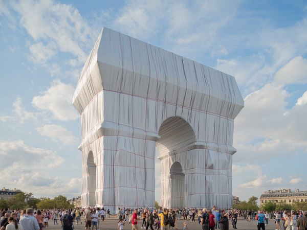

CRVI000316Moritz Von Oswald Trio - Horizontal Structures
Designer unknown · Honest Jon's · 2011
Designer unknown · Honest Jon's · 2011

CRVI001843François Morellet - Two Warps and Wefts of Short Lines 0°–90°
1956
1956

CRVI000269The Brandt Brauer Frick Ensemble - Mr. Nachine
Designer unknown · Studio IK7 · 2011
Designer unknown · Studio IK7 · 2011

CRVI001721Sonia Delaunay - Fashion illustration

CRVI000321Loscil - Plume
Designer unknown · Kranky · 2006
Designer unknown · Kranky · 2006

CRVI000247Marisol - Untitled
Exhibition Poster · 1960-65 · 1960-65
Exhibition Poster · 1960-65 · 1960-65

CRVI001388Ruth Asawa - Untitled (S.693, Hanging Six-Lobed, Two-Part, Discontinuous Surface with a Sphere in the First Lobe)
Ruth Asawa · c. 1956 · hanging sculpture, brass and iron wire · photograph by Dan Bradica · 1956
Ruth Asawa · c. 1956 · hanging sculpture, brass and iron wire · photograph by Dan Bradica · 1956

CRVI001889Alighiero Boetti - Der Himmel über

CRVI001861Unidentified - Graphis 118
1962
1962

CRVI000796Hannah Wilke - Untitled
Coloured pencil, pencil and graphite on paper · 45.7 × 61 cm · 1969
Coloured pencil, pencil and graphite on paper · 45.7 × 61 cm · 1969

CRVI002118Eva Hesse - Untitled
1965
1965

CRVI001384Whitney Museum of American Art - Annual Exhibition 1966: Contemporary Sculpture and Prints
Designer unrecorded · Exhibition catalogue · Dec 16, 1966 – Feb 5, 1967 · 1966
Designer unrecorded · Exhibition catalogue · Dec 16, 1966 – Feb 5, 1967 · 1966

CRVI000617Nejc Prah, Simon Dawson/Bloomberg - Big Changes at the Top
Bloomberg Businessweek, March 19 2018 · 2018
Bloomberg Businessweek, March 19 2018 · 2018

CRVI000780Paul Rand - Jacqueline Cochran leg makeup
Advertisement
Advertisement

CRVI000452Derek Birdsall - Reconstructing Social Psychology
Cover for Nigel Armistead · Penguin Education · 1972
Cover for Nigel Armistead · Penguin Education · 1972

CRVI002105Martin Kippenberger - Untitled (Aussen Alster Hotel)
1985
1985

CRVI000531Unknown - The Lunacy of Text-Based Therapy
New York, March 29-April 11, 2021 · 2021
New York, March 29-April 11, 2021 · 2021

CRVI000448Derek Birdsall - Socialization
Cover for Kurt Danziger · Penguin Education · 1972
Cover for Kurt Danziger · Penguin Education · 1972

CRVI000797Hannah Wilke - Untitled
Coloured pencil and pencil on paper · 45.7 × 61 cm · 1967
Coloured pencil and pencil on paper · 45.7 × 61 cm · 1967

CRVI002383Dick Higgins - Hommage to Africa
1989
1989

CRVI001291Phil Woods, Gene Quill, Sahib Shihab, Hal Stein - Four Altos
Designed by Reid Miles · Prestige 7116 · 1958
Designed by Reid Miles · Prestige 7116 · 1958

CRVI000108Masuteru Aoba - A.D. 3000 ⋯ Energy-Addicted Man?
エネルギーに頼り過ぎた3000年の人間？
エネルギーに頼り過ぎた3000年の人間？

CRVI002294Jeff Koons - Amore
1988
1988

CRVI002233Oskar Schlemmer - Bauhausausstellung 1923
1923
1923

CRVI000071David Kanaga - Dyad OGST
Designer unknown · Software · 2013
Designer unknown · Software · 2013

CRVI002252Claes Oldenburg - Alphabet/Good Humor

CRVI000449Derek Birdsall - Peasants and Peasant Societies
Cover for Teodor Shanin · Penguin Education · 1972
Cover for Teodor Shanin · Penguin Education · 1972

CRVI002131Judy Chicago - 3 Star Cunts
1969
1969

CRVI001392Paul Natkin - Lil' Ed & The Blues Imperials
Photograph by Paul Natkin
Photograph by Paul Natkin

CRVI000447Derek Birdsall - Ideology
Cover for L. B. Brown · Penguin Education · 1972
Cover for L. B. Brown · Penguin Education · 1972

CRVI000841Ottagono - Ottagono 18
settembre 1970 · anno 5 · 1970
settembre 1970 · anno 5 · 1970

CRVI001143Jackie McLean - Destination... Out!
Designed by Larry Miller, photograph by Francis Wolff · Blue Note BLP 4165 · 1964
Designed by Larry Miller, photograph by Francis Wolff · Blue Note BLP 4165 · 1964

CRVI000518Gail Bichler - What Was Twitter, Anyway?
The New York Times Magazine, April 23, 2023 · 2023
The New York Times Magazine, April 23, 2023 · 2023

CRVI000528Gail Bichler - Should You Be in Therapy?
The New York Times Magazine, May 21, 2023 · 2023
The New York Times Magazine, May 21, 2023 · 2023

CRVI000050Shackleton & Vengeance Tenfold - Sferic Ghost Transmits
Designed by Sandhya Ellis · Honest Jon's Records · 2017
Designed by Sandhya Ellis · Honest Jon's Records · 2017

CRVI001954Marina Abramović - Untitled
1990
1990

CRVI000453Derek Birdsall - Culture Against Man
Cover for Jules Henry · Penguin Education · 1972
Cover for Jules Henry · Penguin Education · 1972

CRVI000237Bullitnuts - 1st Of The Day
Designer unknown · Pork Recordings · 1996
Designer unknown · Pork Recordings · 1996

CRVI000793Roy Kuhlman - Yoo-Yoo
Journal of the American Medical Association · 1954
Journal of the American Medical Association · 1954

CRVI001875Agnes Martin - Untitled #12
1977
1977

CRVI001357Ruth Asawa - Untitled (S.055, Hanging Asymmetrical Nine Interlocking Bubbles)
Ruth Asawa · c. 1955 · hanging sculpture, galvanized steel, enameled copper and brass wire · 1955
Ruth Asawa · c. 1955 · hanging sculpture, galvanized steel, enameled copper and brass wire · 1955

CRVI001496El Lissitzky - Announcer
1923
1923

CRVI001956Takashi Murakami - Army of Mushrooms
2003
2003

CRVI001757László Moholy-Nagy - Composition A XI
1923
1923

CRVI001872Agnes Martin - Aspiration
1960
1960

CRVI002130Judy Chicago - Pasadena Lifesavers Red #5
1970
1970

CRVI001863Donald Judd - Untitled (drawing)
1963
1963

CRVI001466Unidentified - Nursery interior with a child in a wicker cradle-cart

CRVI000634Unknown - Single Women
New York, February 22-March 6 2016 · 2016
New York, February 22-March 6 2016 · 2016

CRVI001618Pierre Bonnard - Family Scene
1893
1893

CRVI000614Barry Blitt - Welcome to Congress
The New Yorker, November 19 2018 · 2018
The New Yorker, November 19 2018 · 2018

CRVI000591Unknown - Doctor Feelgood, You Make Me Feel So Good. Are You Sure It's All Right?
New York, February 8, 1971 · 1971
New York, February 8, 1971 · 1971

CRVI002024Unidentified - Pink poured painting

CRVI001856Unidentified - Caricature of a man with a bottle

CRVI002384Dick Higgins - Graphis No. 82
1960
1960

CRVI001444Joseph Maria Olbrich - Entwürfe zu Arbeiterhäusern
Plate from Architektur von Olbrich
Plate from Architektur von Olbrich

CRVI001381Benny Golson - Benny Golson and the Philadelphians
Designer unrecorded · United Artists 4020 · 1959
Designer unrecorded · United Artists 4020 · 1959

CRVI000737Robert Beatty - Untitled
Album cover · artist and title unrecorded · Trendland plate 06
Album cover · artist and title unrecorded · Trendland plate 06

CRVI000743George Greaves - Untitled
Illustration
Illustration

CRVI001385Whitney Museum of American Art - 1964 Annual Exhibition of Contemporary American Sculpture
Designer unrecorded · Exhibition catalogue · Dec 9, 1964 – Jan 31, 1965 · 1964
Designer unrecorded · Exhibition catalogue · Dec 9, 1964 – Jan 31, 1965 · 1964

CRVI001125Dexter Gordon - Go
Designed by Reid Miles, photograph by Francis Wolff · Blue Note BLP 4112 · 1962
Designed by Reid Miles, photograph by Francis Wolff · Blue Note BLP 4112 · 1962

CRVI001894Joseph Kosuth - One and Three Chairs
1965
1965

CRVI001283The Modern Jazz Quartet - Concorde
Designed by Reid Miles · Prestige 7005 · 1955
Designed by Reid Miles · Prestige 7005 · 1955

CRVI001864Donald Judd - Untitled
1968
1968

CRVI000073Event Cloak - Life Strategies
Designer unknown · 2017
Designer unknown · 2017

CRVI000392M. Geddes Gengras - Test Leads
Designer unknown · Holy Mountain · 2012
Designer unknown · Holy Mountain · 2012

CRVI001442Joseph Maria Olbrich - Secession: Kunstausstellung der Vereinigung Bildender Künstler Oesterreichs
Poster · 1898
Poster · 1898

CRVI001482Francis Picabia - Dadaphone no. 7
Cover · 1920
Cover · 1920

CRVI001935Unidentified - Stuffed forms on a chair

CRVI001406Duane Hanson - Baton Twirler
Duane Hanson · 1971 · 1971
Duane Hanson · 1971 · 1971

CRVI001884Michelangelo Pistoletto - Girl Drawing
1979
1979

CRVI001091Kim Laughton - Untitled

CRVI001579Georgia O'Keeffe - White Pansy
1927
1927

CRVI001847Tadasky - G-101

CRVI001359Eva Hesse - Untitled
Pen and black ink on printed, ivory wove graph paper · 27.8 × 21.5 cm · 1967
Pen and black ink on printed, ivory wove graph paper · 27.8 × 21.5 cm · 1967

CRVI002125Jack Whitten - Untitled

CRVI001881Larry Bell - Untitled 2 x 3
2021
2021

CRVI002318Tauba Auerbach - Grain – Fret – Sublimation
2017
2017

CRVI002185Wolfgang Laib - Zikkurat
2000
2000

CRVI001516Ilya Chashnik - Suprematist composition

CRVI000049Jon Appleton - The World Music Theatre Of Jon Appleton
Designed by Ronald Clyne · 1974
Designed by Ronald Clyne · 1974

CRVI000800Joseph Beuys - [Beuys with a rose in a graduated cylinder]
Signed photograph
Signed photograph

CRVI001520Robert Motherwell - From the Lyric Suite
1965
1965

CRVI000470Unknown - Miracle Worker
Bloomberg Businessweek
Bloomberg Businessweek

CRVI000457Janet Halverson - JFK and LBJ
Cover for Tom Wicker · Pelican
Cover for Tom Wicker · Pelican

CRVI002023Unidentified - Melting figure on an office chair

CRVI001955Takashi Murakami - Stew Blue

CRVI000660Unknown - How to Make It in the Art World
New York, April 30, 2012 · 2012
New York, April 30, 2012 · 2012

CRVI000792Roy Kuhlman - Californians Are Crazy
Esquire article opener · 1953
Esquire article opener · 1953

CRVI001387Whitney Museum of American Art - Annual Exhibition 1960: Contemporary Sculpture and Drawings
Designer unrecorded · Exhibition catalogue · Dec 7, 1960 – Jan 22, 1961 · 1960
Designer unrecorded · Exhibition catalogue · Dec 7, 1960 – Jan 22, 1961 · 1960

CRVI002377Jan Sawka - Pyramid of massed figures

CRVI000454Peter Bentley - Brideshead Revisited
Cover for Evelyn Waugh · Penguin
Cover for Evelyn Waugh · Penguin

CRVI001685Gino Severini - Dynamism of a Dancer
1912
1912

CRVI001110unattributed - Grafisk Revy, nummer 19
Cover, fackteknistkt specialnummer · Bokbinderi-Arbetaren / Svensk Typograftidning · 1965
Cover, fackteknistkt specialnummer · Bokbinderi-Arbetaren / Svensk Typograftidning · 1965

CRVI002343Sonia Delaunay - Plate from 'Ses peintures, ses objets, ses tissus simultanés, ses modes'
1925
1925

CRVI001220Mati Klarwein - Untitled
Painting · plate P22-vol2-96 on the artist's own site
Painting · plate P22-vol2-96 on the artist's own site

CRVI000122Shigeo Fukuda - [Poster: figure walking through a red spiral, LOOK series]
Title not established
Title not established

CRVI001758László Moholy-Nagy - K VII
1922
1922

CRVI002274Agnes Martin - Untitled

CRVI001421Maurizio Cattelan - America
2016
2016

CRVI001465Simeon Solomon - Self-Portrait
1860
1860

CRVI000479Martin Schoeller - The Health Issue
New York, July 15-28, 2024 · 2024
New York, July 15-28, 2024 · 2024

CRVI001789Michio Yoshihara - Untitled

CRVI000601Unknown - Replacing the Irreplaceable
New York, October 22, 1979 · 1979
New York, October 22, 1979 · 1979

CRVI002164Gego - Sin título
1966
1966

CRVI000105Masuteru Aoba - 10th Anniversary of "Tategumi Yokogumi" Magazine
Morisawa & Company Ltd. · Silkscreen · 1993
Morisawa & Company Ltd. · Silkscreen · 1993

CRVI002066Unidentified - Two panels: a man with a chair

CRVI000282Unknown - Caron's Face Powder
Poster
Poster

CRVI001417William Claxton - Peggy Moffitt in Rudi Gernreich's “little boy” suit

CRVI000437Unknown - Marx in His Own Words
Cover for Ernst Fischer · Pelican
Cover for Ernst Fischer · Pelican

CRVI000328Stevie Wonder - Signed, Sealed & Delivered I'm Yours
Designer unknown · Motown · 1970
Designer unknown · Motown · 1970

CRVI000628Barry Blitt - Eustace Vladimirovich Tilley
The New Yorker, March 6, 2017 · 2017
The New Yorker, March 6, 2017 · 2017

CRVI001054Takenobu Igarashi - Poster for the 15th Summer Jazz Festival
Poster · 1983
Poster · 1983

CRVI000622Tom Hislop, Stephen Meierding - The Sex Issue
Time Out New York, January 31-February 6 2018 · 2018
Time Out New York, January 31-February 6 2018 · 2018

CRVI000785Angelo Testa and Paul Rand - IBM (Furnishing fabric)
Linen · 304.8 × 132.1 cm · late 1950s
Linen · 304.8 × 132.1 cm · late 1950s

CRVI000581Alvin Lustig - Twenty-Third Commencement
Beverly Hills High School · 1940
Beverly Hills High School · 1940

CRVI001612Alphonse Mucha - Ornament
1901–2
1901–2

CRVI001445Joseph Maria Olbrich - Das Haus Olbrich, Darmstadt
Postcard · Darmstadt artists' colony · 1901
Postcard · Darmstadt artists' colony · 1901

CRVI002136Hannah Wilke - Art for Life's Sake

CRVI002039Tauba Auerbach - Metamaterial Slice Ray

CRVI001386Whitney Museum of American Art - Annual Exhibition 1962: Contemporary Sculpture and Drawings
Designer unrecorded · Exhibition catalogue · Dec 12, 1962 – Feb 3, 1963 · 1962
Designer unrecorded · Exhibition catalogue · Dec 12, 1962 – Feb 3, 1963 · 1962

CRVI000554Thomas Alberty - She Has Her Mother's Eyes. And Agent.
New York, December 19, 2022 · 2022
New York, December 19, 2022 · 2022

CRVI000864Julian Stanczak - Airy
1973 · 1973
1973 · 1973

CRVI000508Raul Aguila - Wild About Harry
Variety, December 2, 2020 · 2020
Variety, December 2, 2020 · 2020

CRVI000592Unknown - Can Anybody Handle the Soaring Costs of Private Schools?
New York, March 29, 1971 · 1971
New York, March 29, 1971 · 1971

CRVI001168Musical Youth - Pass The Dutchie
Designer unrecorded · MCA Records YOU 1 · 1982
Designer unrecorded · MCA Records YOU 1 · 1982

CRVI000359The Staple Singers - Let's Do It Again (Original Soundtrack)
Designer unknown · Curtom · 1975
Designer unknown · Curtom · 1975

CRVI001512El Lissitzky - Proun 30
1920
1920

CRVI001513El Lissitzky - Untitled
1920
1920

CRVI000540QuickHoney - Can I SPAC My Stonks With NFTs?
New York, April 12- 25, 2021 · 2021
New York, April 12- 25, 2021 · 2021

CRVI000088Matmos - Supreme Balloon
Designer unknown · Matador · 2008
Designer unknown · Matador · 2008

CRVI000415Candyman - Ain't No Shame In My Game
Designer unknown · Épie · 1990
Designer unknown · Épie · 1990

CRVI001443Unidentified - Wiener Künstler-Postkarte
Postcard
Postcard

CRVI002171Nasreen Mohamedi - Untitled

CRVI001739Ksenia Boguslavskaya - Costume design: dress of Tver women

CRVI002244unattributed - Bauhaussiedlung Dessau-Törten, axonometric

CRVI000423Har-You Percussion Group - The Har-You Percussion Group
Designer unknown · ESP Disk · 1969
Designer unknown · ESP Disk · 1969

CRVI001903Unidentified - White stepped relief

CRVI000657David Parkins - The Surprising Sophistication of Twitter
Bloomberg Businessweek, November 11–17 2013 · 2013
Bloomberg Businessweek, November 11–17 2013 · 2013

CRVI000651Unknown - The Home Issue
Kinfolk, Spring 2014 Brainiest · 2014
Kinfolk, Spring 2014 Brainiest · 2014

CRVI002141Mike Kelley - Untitled

CRVI001874Agnes Martin - Untitled
1963
1963

CRVI001058Rick Valicenti - Show Boat — Lyric Opera of Chicago
Poster
Poster

CRVI002248Claes Oldenburg and Coosje van Bruggen - Dropped Cone
2001
2001

CRVI001804Roy Lichtenstein - Alka Seltzer
1966
1966

CRVI001866Donald Judd - Untitled
1969
1969

CRVI001962Theaster Gates - Standing Throne 4
2012
2012

CRVI001905Robert Barry - Untitled
1965
1965

CRVI001701Benedetta Cappa - Grand X
1931
1931

CRVI000396James White & The Blacks - Off White
Designer unknown · 1979
Designer unknown · 1979

CRVI000588Unknown - The Men of Women's Liberation Have Learned Not to Laugh
New York, May 18, 1970 · 1970
New York, May 18, 1970 · 1970

CRVI001652Juan Gris - Three Lamps
1911
1911

CRVI001702Benedetta Cappa - Ironia
1930
1930

CRVI001763Anni Albers - Design for a Jacquard Weaving
1926
1926

CRVI000541Agnethe Glatved - Current Mood: Resilient
Parents, March 2021 · 2021
Parents, March 2021 · 2021

CRVI002037Tauba Auerbach - Installation view, STANDARD (OSLO)
2020
2020

CRVI002079Lizzie Fitch and Ryan Trecartin - Game Ampersand
2015
2015

CRVI000548Nia Lawrence - Rihanna + Lorna Simpson
ESSENCE, January/February 2021 · 2021
ESSENCE, January/February 2021 · 2021

CRVI001756László Moholy-Nagy - Pneumatik
1924
1924

CRVI002277Frank Stella - Feneralia, from Imaginary Places

CRVI001606John William Waterhouse - Day Dreams
1912
1912

CRVI001501Gustav Klutsis - Dynamic City
1919
1919

CRVI001036Adrian Ghenie - Untitled painting
Christie's
Christie's

CRVI001614Alphonse Mucha - Documents Décoratifs: Plate 41
1901–2
1901–2

CRVI000677Tom Alberty, Eva O'Leary - What Instagram Did to Me
New York, September 16-29, 2019 · 2019
New York, September 16-29, 2019 · 2019

CRVI001583Ralston Crawford - Overseas Highway

CRVI000242Shazz - Shazz
Designer unknown · Columbia · 1998
Designer unknown · Columbia · 1998

CRVI002369Dick Higgins - Symphony #269 from The Thousand Symphonies
1968
1968

CRVI000288Utagawa Hiroshige - Eight Shadow Figures Art Print
Poster
Poster

CRVI001580Georgia O'Keeffe - Cow's Skull with Calico Roses
1931
1931

CRVI002177Yasumasa Morimura - Self-portrait as Marilyn
1995
1995

CRVI002340Paul McCarthy - White Snow, wood sculpture

CRVI000467Unknown - Transition Game
Bloomberg Businessweek
Bloomberg Businessweek

CRVI001416Paul Bacon, Ken Braren and Harris Lewine - The Unique Thelonious Monk
Album cover · Riverside RLP 12-209 · 1958
Album cover · Riverside RLP 12-209 · 1958

CRVI001486Kurt Schwitters - Merz 3 Portfolio: Plate 1
1923
1923

CRVI001925Anselm Kiefer - 20 Years of Solitude
1993
1993

CRVI001941Unidentified - Gilded canopy, installation view

CRVI002237unattributed - Weaving design on graph paper

CRVI000635Barry Blitt - Anything But That
The New Yorker, November 14 2016 · 2016
The New Yorker, November 14 2016 · 2016

CRVI001748Georges Vantongerloo - Fonction de lignes

CRVI000141Shin Matsunaga - Shiseido Sun Oil
Offset lithograph · 1971
Offset lithograph · 1971

CRVI001998Yinka Shonibare - Seated figure in Dutch wax cloth

CRVI002003Otobong Nkanga - Installation view
2018
2018

CRVI000783Paul Rand - No Way Out
Twentieth Century-Fox · 1950
Twentieth Century-Fox · 1950

CRVI002085Wolfgang Tillmans - Portrait with guitar

CRVI002014Unidentified - Assemblage of painted frames

CRVI000067Bourbonese Qualk - My Government Is My Soul
Designer unknown · Fünfundvierzig · 1989
Designer unknown · Fünfundvierzig · 1989

CRVI001419Unidentified - Two boys in the sea beside a boat

CRVI001120Bobby Hutcherson - Stick-Up!
Designed by Reid Miles, photograph by Francis Wolff · Blue Note BST 84244 · 1968
Designed by Reid Miles, photograph by Francis Wolff · Blue Note BST 84244 · 1968

CRVI000652Unknown - Coke Finally Admits It Has a Fat Problem--And a Plan to Fix It
Bloomberg Businessweek, August 4-10, 2014 · 2014
Bloomberg Businessweek, August 4-10, 2014 · 2014

CRVI001814Peter Blake - The Beach Boys
1964
1964

CRVI002324Ed Ruscha - Standard Station

CRVI000248Tetsuya Ishida - Mebae
Exhibition Poster · 1998 · 1998
Exhibition Poster · 1998 · 1998

CRVI001523Joan Mitchell - Untitled
1950
1950

CRVI000573Alvin Lustig - Three Lives
Gertrude Stein · New Directions, New Classics NC3 · 1945
Gertrude Stein · New Directions, New Classics NC3 · 1945

CRVI001886Michelangelo Pistoletto - Standing Man (mirror painting)
1962
1962

CRVI002374Jan Sawka - Haloed figure at a table in a pink interior

CRVI001611Alphonse Mucha - Lorenzaccio
Poster · 1896–1900
Poster · 1896–1900

CRVI001858Nam June Paik - Robot with television screens

CRVI001407Duane Hanson - Man on a Bench
Duane Hanson ·
Duane Hanson ·

CRVI002151Louise Lawler - Life After 1945 (distorted)

CRVI002006Mona Hatoum - Impenetrable
1999
1999

CRVI000636Vasilis Papadrosos, Peter Jablokow - United's Quest to Be Less Awful
Bloomberg Businessweek, January 18-24 READER'S CHOICE Chicagoly "Addicted to the Internet," Fall 2016 · 2016
Bloomberg Businessweek, January 18-24 READER'S CHOICE Chicagoly "Addicted to the Internet," Fall 2016 · 2016

CRVI001674Giacomo Balla - Dynamism of a Dog on a Leash
1912
1912

CRVI001926Anselm Kiefer - Winter Landscape
1970
1970

CRVI001270Grachan Moncur III - Some Other Stuff
Designed by Reid Miles · Blue Note 4177 · 1965
Designed by Reid Miles · Blue Note 4177 · 1965

CRVI001610Alphonse Mucha - Documents Décoratifs: Sweet Peas
1901–2
1901–2

CRVI001657Juan Gris - Guitar and Glass
1912
1912

CRVI000106Natori Shunsen - Matsumoto Koshiro as the white bearded Ikkyu
from the supplement to the Collection of Shunsen portraits (Shunsen nigao-e shu) series · color woodblock · 1929
from the supplement to the Collection of Shunsen portraits (Shunsen nigao-e shu) series · color woodblock · 1929

CRVI000542Nathalie Kirsheh - The Best of Global Beauty
Allure, May 2021 · 2021
Allure, May 2021 · 2021

CRVI001717Albert Bloch - Prof. Wayupski's Aerial Stunts
Comic strip
Comic strip

CRVI000061Tom Cameron - Music To Wash Dishes By
Artwork by Tom Cameron · Bathing Records, Inc. · 1982
Artwork by Tom Cameron · Bathing Records, Inc. · 1982

CRVI001500Gustav Klutsis - Design for a screen-tribune kiosk
1922
1922

CRVI001510Frederick Etchells - Vorticist Composition

CRVI001260John Coltrane - Coltrane's Sound
Designed by Marvin Israel · Atlantic 1419 · 1964
Designed by Marvin Israel · Atlantic 1419 · 1964

CRVI000127Koichi Sato - Sakurahime Azuma Bunsho
桜姫東文章 · Shinjuku Kinokuniya Hall · 1976 Tomin Arts Festival · 1976
桜姫東文章 · Shinjuku Kinokuniya Hall · 1976 Tomin Arts Festival · 1976

CRVI002041Unidentified - Layered painting in green and yellow

CRVI000625Jody Quon, Christopher Anderson - David Letterman Returns
New York, March 6-19, 2017 · 2017
New York, March 6-19, 2017 · 2017

CRVI000268Lack of Afro - Press On
Designer unknown · Freestyle · 2007
Designer unknown · Freestyle · 2007

CRVI001958Julie Mehretu - Stadia I
2004
2004

CRVI001591John Baeder - Red Stripes
2002
2002

CRVI002332Ed Ruscha - Column with Speed Lines
2003
2003

CRVI002267Christo and Jeanne-Claude - L'Arc de Triomphe, Wrapped
2021
2021

CRVI001403Duane Hanson - Woman with Dog
Duane Hanson · 1977 · Whitney Museum of American Art · 1977
Duane Hanson · 1977 · Whitney Museum of American Art · 1977

CRVI001615Gustav Klimt - Mäda Primavesi (1903–2000)
1912–13
1912–13

CRVI000507Oliver Shaw - The Stupid Issue
VICE, March 2020 · 2020
VICE, March 2020 · 2020

CRVI000650Unknown - Health
New York, June 9-15, 2014 · 2014
New York, June 9-15, 2014 · 2014

CRVI001031Adrian Ghenie - Weltwehmut
Albertina, Vienna · Infinitart Foundation · 2024
Albertina, Vienna · Infinitart Foundation · 2024

CRVI001436Unidentified - Interior with striped walls and bentwood chairs

CRVI000130Koichi Sato - New Music Media, New Magic Media
1974
1974

CRVI000756Tetsuya Ishida - Public Property
Kōkyōbutsu · acrylic on canvas · 1999
Kōkyōbutsu · acrylic on canvas · 1999

CRVI001422Unidentified - Portrait of Maurizio Cattelan

CRVI002033Nicole Eisenman - Dark Light
2017
2017

CRVI000182Albert Collins - The Cool Sound of Albert Collins
Designer unknown
Designer unknown

CRVI002012Kohei Nawa - PixCell-Deer

CRVI002088Andreas Gursky - Bahrain I

CRVI000408G.L.O.B.E. & Whiz Kid - Play That Beat Mr. D.J.
Designer unknown · Tommy Boy · 1983
Designer unknown · Tommy Boy · 1983

CRVI002226László Moholy-Nagy - Xanti Schawinsky on a Bauhaus Balcony

CRVI000169Chet Baker - Chet Baker & Crew
Designer unknown · Pacific Jazz 1224 · 1956
Designer unknown · Pacific Jazz 1224 · 1956

CRVI001490Max Ernst - Ambiguous Figures (1 copper plate 1 zinc plate 1 rubber cloth)
1919
1919

CRVI001592John Baeder - Red Robin Diner

CRVI001088Kim Laughton - Untitled

CRVI002181Zhang Huan - 1/2

CRVI001601Charles Angrand - End of the Harvest
c. 1892–1905
c. 1892–1905

CRVI002295Jeff Koons - Bear and Policeman
1988
1988

CRVI000494Armando Veve - Sting Theory
The New York Times Magazine, November 17, 2024 · 2024
The New York Times Magazine, November 17, 2024 · 2024

CRVI001613Alphonse Mucha - Ilsée, Princesse de Tripoli
1897
1897

CRVI002157William Eggleston - Untitled (yellow building)

CRVI001959Julie Mehretu - Stadia II
2004
2004

CRVI000877Maurice Denis - La Fontaine
Esquisse préparatoire du décor Terre Latine · peinture à l’essence sur papier calque collé sur toile · 1906–1908
Esquisse préparatoire du décor Terre Latine · peinture à l’essence sur papier calque collé sur toile · 1906–1908

CRVI001175Thelonious Monk - Thelonious Alone In San Francisco
Designed by Harris Lewine, Ken Braren, Paul Bacon, photograph by William Claxton · Riverside Records RLP 1158 · 1959
Designed by Harris Lewine, Ken Braren, Paul Bacon, photograph by William Claxton · Riverside Records RLP 1158 · 1959

CRVI000055Polygon Window - Surfing on Sine Waves
Artwork by The Designers Republic · Warp Records · 1992
Artwork by The Designers Republic · Warp Records · 1992

CRVI000107Masuteru Aoba - The Bread Is For Peace
戦争に使うパンはない · anti-war poster · carries an Arthur Koestler passage in twelve languages · c1975
戦争に使うパンはない · anti-war poster · carries an Arthur Koestler passage in twelve languages · c1975

CRVI001290Webster Young - For Lady
Designed by Reid Miles, photograph by Esmond Edwards · Prestige 7106 · 1957
Designed by Reid Miles, photograph by Esmond Edwards · Prestige 7106 · 1957

CRVI000676Tom Alberty, Bobby Doherty - The Golden Age of Pods
New York, March 18-31, 2019 · 2019
New York, March 18-31, 2019 · 2019

CRVI001684Gino Severini - Self-Portrait
1912
1912

CRVI001948Ai Weiwei - Installation, German Pavilion, Venice Biennale

CRVI000245Peter Bentley - Urgent Copy
Cover for Anthony Burgess · Penguin
Cover for Anthony Burgess · Penguin

CRVI002121Alice Neel - The Family (John Gruen, Jane Wilson and Julia)
1970
1970

CRVI002224László Moholy-Nagy - Human Mechanics

CRVI002238Gunta Stölzl - Jacquard weaving

CRVI002045Jenny Saville - Rupture
2020
2020

CRVI000336The Bar-Kays - Soul Finger
Designer unknown · Volt · 1967
Designer unknown · Volt · 1967

CRVI002240unattributed - Overlapping concentric colour discs, quartered

CRVI000681Heavy J - Akira
Hand-painted Ghanaian mobile cinema poster
Hand-painted Ghanaian mobile cinema poster

CRVI000116Tadanori Yokoo - Made in Japan, Tadanori Yokoo, Having Reached a Climax at the Age of 29, I Was Dead
Self-portrait poster · 1965
Self-portrait poster · 1965

CRVI002047Jenny Saville - Untitled

CRVI001679Carlo Carrà - Portrait of Marinetti
1915
1915

CRVI000318Tosca - Suzuki
Designer unknown · G-Stone · 2000
Designer unknown · G-Stone · 2000

CRVI001777Unidentified - Red impasto composition

CRVI002331Ed Ruscha - Building under a red sky

CRVI000136Shigeo Fukuda - [Poster: figure walking off a curling sheet of paper]
Title not established
Title not established

CRVI001241Mati Klarwein - Godmother
Painting · plate V25-Godmother on the artist's own site
Painting · plate V25-Godmother on the artist's own site

CRVI002145Barbara Kruger - Untitled (I shop therefore I am)

CRVI001271Art Blakey & The Jazz Messengers - Indestructible
Designed by Reid Miles, photograph by Francis Wolff · Blue Note 4193 · 1966
Designed by Reid Miles, photograph by Francis Wolff · Blue Note 4193 · 1966

CRVI001199The Last Poets - This Is Madness
Painting by Mati Klarwein · Douglas 7 · 1971
Painting by Mati Klarwein · Douglas 7 · 1971

CRVI001187Mati Klarwein - The Last Poets, This Is Madness — back cover painting
Painting · 1971
Painting · 1971

CRVI001039Kiyoshi Awazu - Untitled poster
AGI (Alliance Graphique Internationale) member archive
AGI (Alliance Graphique Internationale) member archive

CRVI000198Unknown - Nope
Reaction GIF · 77 frames, 3.9s loop
Reaction GIF · 77 frames, 3.9s loop

CRVI000575Alvin Lustig - Selected Poems
Ezra Pound · New Directions, New Classics NC22 · 1949
Ezra Pound · New Directions, New Classics NC22 · 1949

CRVI002109Hermann Nitsch - Zonder titel

CRVI000550D.W. Pine - Day One.
TIME, February 1-8, 2021 · 2021
TIME, February 1-8, 2021 · 2021

CRVI001743Rudolf Schlichter - Lady with a Red Scarf

CRVI000875John Provencher - [Bloomberg, weather]
Bloomberg Businessweek
Bloomberg Businessweek

CRVI000713Helado Negro - The Last Sound On Earth
Designed by Robert Beatty · 2025
Designed by Robert Beatty · 2025

CRVI000132Tadanori Yokoo - The 5th International Biennial Exhibition of Prints in Tokyo
The National Museum of Modern Art, Tokyo · 11.2–12.15 · 1966
The National Museum of Modern Art, Tokyo · 11.2–12.15 · 1966

CRVI000862Julian Stanczak - Sequential Chroma
Screen print on paper · 76.8 × 65.4 cm · 1978
Screen print on paper · 76.8 × 65.4 cm · 1978

CRVI000700Heavy J - Sister Act
Hand-painted Ghanaian film poster
Hand-painted Ghanaian film poster

CRVI000373Mint Condition - Meant To Be Mint
Designer unknown · Perspective · 1991
Designer unknown · Perspective · 1991

CRVI001855Davis Lisboa - Robert Filliou 32
2024
2024

CRVI001810Tom Wesselmann - Still life
1963
1963

CRVI000546Emily Kimbro - The 50 Best BBQ Joints
Texas Monthly, November 2021 · 2021
Texas Monthly, November 2021 · 2021

CRVI001787Unidentified - Red chevron composition

CRVI001043Kiyoshi Awazu - Contemporary Print Exhibition, 50 Earlham Street Gallery, London
Poster · 1981
Poster · 1981

CRVI000840Ottagono - Ottagono 70
settembre 1983 · anno 18 · 1983
settembre 1983 · anno 18 · 1983

CRVI000444David Pelham - The Drought
Cover for J. G. Ballard · Penguin Science Fiction · 1974
Cover for J. G. Ballard · Penguin Science Fiction · 1974

CRVI001635Emil Nolde - Mask Still Life III
1911
1911

CRVI000709Heavy J - I Think You Should Leave
Hand-painted Ghanaian film poster
Hand-painted Ghanaian film poster

CRVI001045Kiyoshi Awazu - Untitled poster

CRVI002147Barbara Kruger - Installation with text

CRVI000632Michael Goesele, Justin Metz - Pop Go the Weasels
Newsweek, November 17, 2017 · 2017
Newsweek, November 17, 2017 · 2017

CRVI000702Heavy J - Raising Arizona
Hand-painted Ghanaian film poster
Hand-painted Ghanaian film poster

CRVI000512D.W. Pine - Unprecedented.
TIME, April 24/May 1, 2023 · 2023
TIME, April 24/May 1, 2023 · 2023

CRVI001690Luigi Russolo - Chioma
1910–1911
1910–1911

CRVI002385Emil Nolde - Crucifixion (Kreuzigung), centre panel of The Life of Christ
1912
1912

CRVI001113unattributed - Olivetti — cover with geometric panels
Designer unrecorded
Designer unrecorded

CRVI001981Amy Sherald - Woman in a spotted dress

CRVI001817Pauline Boty - With Love to Jean-Paul Belmondo

CRVI001931Julian Schnabel - Plate painting

CRVI001798Jasper Johns - Target with Plaster Casts
1955
1955

CRVI002362Amy Sherald - As Soft as She Is…
2022
2022

CRVI001285The Gil Mellé Quartet - Mellé Plays Primitive Modern
Designer unrecorded · Prestige 7040 · 1956
Designer unrecorded · Prestige 7040 · 1956

CRVI000761Waldemar Świerzy - Czas apokalipsy
Apocalypse Now · Polish film poster · 1981
Apocalypse Now · Polish film poster · 1981

CRVI000545James Van Fleteren - Build a Better Breakfast Sandwich
EatingWell, May 2021 · 2021
EatingWell, May 2021 · 2021

CRVI001216Pharoah Sanders - Karma
Designed by Robert & Barbara Flynn, photograph by Chuck Stewart · Impulse! AS-9181 · 1969
Designed by Robert & Barbara Flynn, photograph by Chuck Stewart · Impulse! AS-9181 · 1969

CRVI001780Atsuko Tanaka - Electric Dress
1956
1956

CRVI000730Robert Beatty - Floodgate Companion
Spread · self-published
Spread · self-published

CRVI002382Alan Aldridge - Head composed of figures
1971
1971

CRVI001628Kees van Dongen - Modjesko, Soprano Singer
1908
1908

CRVI001666Robert Delaunay - Rythme n° 1
1912
1912

CRVI001047 - Japanese poster for Jean-Luc Godard's 'Week End'
Film poster
Film poster

CRVI002016Zeng Fanzhi - Van Gogh

CRVI000698Heavy J - Tampopo
Hand-painted Ghanaian film poster
Hand-painted Ghanaian film poster

CRVI002168Fernando Botero - The Study of Vermeer

CRVI001245Mati Klarwein - Clone (unfinished)
Painting · plate V32-clone-unfinished on the artist's own site
Painting · plate V32-clone-unfinished on the artist's own site

CRVI002156William Eggleston - Untitled

CRVI001249Mati Klarwein - Nativity
Painting · plate V03-Nativity on the artist's own site
Painting · plate V03-Nativity on the artist's own site

CRVI000725The Weeknd - Dawn FM
Designed by Robert Beatty · 2022
Designed by Robert Beatty · 2022

CRVI001521Barnett Newman - Onement I
1948
1948

CRVI001164Lee Morgan - Cornbread
Designed by Reid Miles, photograph by Francis Wolff · Blue Note BST 84222 · 1967
Designed by Reid Miles, photograph by Francis Wolff · Blue Note BST 84222 · 1967

CRVI000784Ivan Chermayeff - By the Sword Divided
Mobil Masterpiece Theatre · 1986
Mobil Masterpiece Theatre · 1986

CRVI000711Tame Impala - Disciples
Designed by Robert Beatty · 2015
Designed by Robert Beatty · 2015

CRVI000873John Provencher - [On, Clubhouse Paris]
On · Clubhouse Paris
On · Clubhouse Paris

CRVI000445John Griffith - The Black Cloud
Cover for Fred Hoyle · Penguin
Cover for Fred Hoyle · Penguin

CRVI001638Emil Nolde - Red-Haired Girl
1919
1919

CRVI000082Klaus Weiss - Time Signals
Designer unknown · Selected Sound · 1978
Designer unknown · Selected Sound · 1978

CRVI001294Gene Ammons' All Stars - The Big Sound
Designer unrecorded · Prestige 7132 · 1958
Designer unrecorded · Prestige 7132 · 1958

CRVI000835Mona Chalabi - Congratulations, You’re A Parent! Here’s $1. Now Take This Quiz…
New York Magazine
New York Magazine

CRVI000848form - form 8
Internationale Revue · 1959 · 1959
Internationale Revue · 1959 · 1959

CRVI001532Alexandre Hogue - Crucified Land
1939
1939

CRVI000843domus - domus 1109
February 2026 · 2026
February 2026 · 2026

CRVI001108Martin Wong - Portrait of Mikey Piñero at Ridge Street and Stanton
Acrylic on canvas, 72 × 72 in · also titled “La Vera de Nuyorico: Miguel Piñero” · 1985
Acrylic on canvas, 72 × 72 in · also titled “La Vera de Nuyorico: Miguel Piñero” · 1985

CRVI001714Heinrich Campendonk - Bucolic Landscape
1913
1913

CRVI001030Adrian Ghenie - Untitled painting
Oil on canvas · Sold Sotheby's London
Oil on canvas · Sold Sotheby's London

CRVI001042Kiyoshi Awazu - Poster Nippon
Screenprint · LACMA, Marc Treib Collection · 1972
Screenprint · LACMA, Marc Treib Collection · 1972

CRVI000187E. McKnight Kauffer - Point Counter Point
Dust jacket for Aldous Huxley's Point Counter Point · The Modern Library, New York · 1942
Dust jacket for Aldous Huxley's Point Counter Point · The Modern Library, New York · 1942

CRVI002246Mark Rothko - Untitled

CRVI000624David Plunkert - Blowhard
The New Yorker, August 28, 2017 · 2017
The New Yorker, August 28, 2017 · 2017

CRVI000446Unknown - The New Men
Cover for C. P. Snow · Penguin
Cover for C. P. Snow · Penguin

CRVI000691Mr. Nana Agyq - Austin Powers in Goldmember
Hand-painted Ghanaian film poster
Hand-painted Ghanaian film poster

CRVI000252Lech Majewski - Ras le cœur
Film Poster Designed By Lech Majewski · 1980 · 1980
Film Poster Designed By Lech Majewski · 1980 · 1980

CRVI002220Anni Albers - Wall hanging

CRVI001643Max Pechstein - Indian and Woman
1910
1910

CRVI002381Alan Aldridge - Captain Fantastic and the Brown Dirt Cowboy (album cover)
1975
1975

CRVI000682Mr. Nana Agyq - Gummo
Hand-painted Ghanaian film poster · after the film by Harmony Korine
Hand-painted Ghanaian film poster · after the film by Harmony Korine

CRVI001195Mati Klarwein - Bitches Brew
Painting · the whole gatefold work · 1969
Painting · the whole gatefold work · 1969

CRVI001675Giacomo Balla - Self-Portrait
1902
1902

CRVI001132Grant Green - Goin' West
Designer unrecorded · Blue Note BST 84310 · 1969
Designer unrecorded · Blue Note BST 84310 · 1969

CRVI000425Bob Thompson and His Orchestra & Chorus - Just For Kicks
Designer unknown · RCA Victor · 1959
Designer unknown · RCA Victor · 1959

CRVI001142Jackie McLean - Demon's Dance
Designed by Bob Venosa, artwork by Mati Klarwein · Blue Note BST 84345 · 1970
Designed by Bob Venosa, artwork by Mati Klarwein · Blue Note BST 84345 · 1970

CRVI000032Earle Brown - Music By Earle Brown
Artwork by Judith Lerner · Composers Recordings Inc. · 1974
Artwork by Judith Lerner · Composers Recordings Inc. · 1974

CRVI001488Unidentified - Dada photomontage naming Raoul Hausmann

CRVI000358Stevie Wonder - Fulfillingness' First Finale
Designer unknown · Tamla · 1974
Designer unknown · Tamla · 1974

CRVI001372Eric Dolphy - Out There
Cover painting by Richard “Prophet” Jennings · New Jazz 8252 · 1960
Cover painting by Richard “Prophet” Jennings · New Jazz 8252 · 1960

CRVI000563Kadir Nelson - High Style
The New Yorker, February 14 and 21, 2022 · 2022
The New Yorker, February 14 and 21, 2022 · 2022

CRVI001619Paul Ranson - Nude on a patterned ground

CRVI001830Richard Anuszkiewicz - The Fourth of the Three
1963
1963

CRVI002054John Currin - The Neverending Story
1994
1994

CRVI001806James Rosenquist - Source for President Elect
1961
1961

CRVI001503Gustav Klutsis - Without Heavy Industry We Cannot Build Any Industry
Poster · 1930
Poster · 1930

CRVI000443David Pelham - The Drowned World
Cover for J. G. Ballard · Penguin Science Fiction · 1974
Cover for J. G. Ballard · Penguin Science Fiction · 1974

CRVI001529Jack Levine - The Arrest
1983
1983

CRVI001467Albert Joseph Moore - Midsummer
1887
1887

CRVI002216Josef Albers - Homage to the Square

CRVI001812Richard Hamilton - Just what is it that makes today's homes so different, so appealing?
1956
1956

CRVI001694Filippo Tommaso Marinetti - Parole in libertà
1932
1932

CRVI002379Jan Sawka - Jan Sawka: Paintings & Constructions (exhibition poster)
1985
1985

CRVI001306June Christy - Off Beat
Designer unrecorded · Capitol T 1498 · 1960
Designer unrecorded · Capitol T 1498 · 1960

CRVI001646Akseli Gallen-Kallela - Head of a man at a blue window

CRVI000390Fennesz - Endless Summer
Designer unknown · 2001
Designer unknown · 2001

CRVI001107Martin Wong - Psychiatrists Testify: Demon Dogs Drive Man to Murder
Acrylic on canvas, 36 × 48 in · also titled “Demon Dogs Drive Man to Murder” · 1980
Acrylic on canvas, 36 × 48 in · also titled “Demon Dogs Drive Man to Murder” · 1980

CRVI001275Howard McGhee - Howard McGhee
Designed by Paul Bacon · Blue Note 5012 · 1952
Designed by Paul Bacon · Blue Note 5012 · 1952

CRVI000096Stock, Hausen & Walkman - Organ Transplants Vol. 1
Designer unknown · Hot Air · 1996
Designer unknown · Hot Air · 1996

CRVI001312Martin Denny - Exotica
Photograph by Garrett-Howard · Liberty LRP 3034 · 1957
Photograph by Garrett-Howard · Liberty LRP 3034 · 1957

CRVI000397Frankie Knuckles - Beyond The Mix
Designer unknown · Virgin · 1991
Designer unknown · Virgin · 1991

CRVI00004023 Skidoo - Seven Songs
Artwork by Neville Brody · Fetish Records · 1982
Artwork by Neville Brody · Fetish Records · 1982

CRVI001228Mati Klarwein - Untitled
Painting · plate P15-vol2-82 on the artist's own site
Painting · plate P15-vol2-82 on the artist's own site

CRVI000602Unknown - Living With the Computer
New York, January 9, 1984 · 1984
New York, January 9, 1984 · 1984

CRVI001485Hannah Höch - Photomontage with a child and the letter P

CRVI001986Njideka Akunyili Crosby - Re-Branding My Love
2011
2011

CRVI001231Mati Klarwein - Untitled
Painting · plate P14-vol2-77 on the artist's own site
Painting · plate P14-vol2-77 on the artist's own site

CRVI001854Davis Lisboa - Robert Filliou 35
2024
2024

CRVI002004Otobong Nkanga - Unearthed – Sunlight
2021
2021

CRVI000775Brownjohn, Chermayeff & Geismar - That New York
About U.S. — Experimental Typography by American Designers · The Composing Room · 1960
About U.S. — Experimental Typography by American Designers · The Composing Room · 1960

CRVI001715Heinrich Campendonk - Stillleben mit zwei Köpfen
1914
1914

CRVI001546Lois Mailou Jones - Woman in a turban with masks

CRVI001310Les Baxter - 'Round The World With Les Baxter
Designer unrecorded · Capitol T 780 · 1957
Designer unrecorded · Capitol T 780 · 1957

CRVI001483Hannah Höch - Collage of eyes in a vase

CRVI000594Unknown - Money Advisor: How to Borrow Money… Cleverly
New York, January 24, 1972 · 1972
New York, January 24, 1972 · 1972

CRVI002032Nicole Eisenman - Beer garden

CRVI001276Gil Mellé Quintet - New Faces – New Sounds
Designed by Gil Mellé · Blue Note 5020 · 1953
Designed by Gil Mellé · Blue Note 5020 · 1953

CRVI000079John Bender - I Don't Remember Now
Designer unknown · Record Sluts · 1980
Designer unknown · Record Sluts · 1980

CRVI002364Tauba Auerbach - Woven composition in orange and white

CRVI000659Unknown - Bang Head Here
Bloomberg Businessweek, May 28–June 3, 2012 · 2012
Bloomberg Businessweek, May 28–June 3, 2012 · 2012

CRVI000704Farkira - Oppenheimer
Hand-painted Ghanaian film poster
Hand-painted Ghanaian film poster

CRVI000868Julian Stanczak - [Untitled]

CRVI002077Christian Schad - Street scene with figures

CRVI001862George Maciunas - An Anthology of Chance Operations
Cover · 1963
Cover · 1963

CRVI001427Paul Signac - Woman with a Parasol
1893
1893

CRVI000825Seymour Chwast - Canto XVIII, PPG #52
Push Pin Graphic #52 · 46 × 71 cm · 1967
Push Pin Graphic #52 · 46 × 71 cm · 1967

CRVI000139Jutaro Itoh - Hiroshima (orange)
廣島
廣島

CRVI000570Gail Bichler - Boxed In
The New York Times Magazine, December 4, 2022 · 2022
The New York Times Magazine, December 4, 2022 · 2022

CRVI001835Unidentified - Striped composition

CRVI000229Paolo Achenza Trio - Do It
Designer unknown · Right Tempo · 1994
Designer unknown · Right Tempo · 1994

CRVI000865Julian Stanczak - [Untitled]

CRVI002184Etel Adnan - Équilibre

CRVI000319Cornelius - Fantasma
Designer unknown · Trattoria · 1997
Designer unknown · Trattoria · 1997

CRVI001300Blossom Dearie - Once Upon A Summertime
Designed by Gene Federico · Verve Records MG V-2606 · 1958
Designed by Gene Federico · Verve Records MG V-2606 · 1958

CRVI000524Cian Browne - Taylor Russell
W, January 2023 · 2023
W, January 2023 · 2023

CRVI001206The Jazz Messengers - The Complete Jazz Messengers At The Cafe Bohemia
Designed by Reid Miles, photograph by Francis Wolff · Blue Note · 1956
Designed by Reid Miles, photograph by Francis Wolff · Blue Note · 1956

CRVI001570Christian Schad - Halbakt
1929
1929

CRVI001556Remedios Varo - Creation with Astral Rays
1955
1955

CRVI000101p-Ziq - Lunatic Harness
Designer unknown · Planet Mu · 1997
Designer unknown · Planet Mu · 1997

CRVI002142Sherrie Levine - After Mondrian

CRVI001340Chris Foss - Dune — a spacecraft
Illustration by Chris Foss
Illustration by Chris Foss

CRVI000361Betty Wright - Hard to Stop
Designer unknown · TK · 1973
Designer unknown · TK · 1973

CRVI002059Christina Quarles - Exhibition image
2023
2023

CRVI000782Ivan Chermayeff - Ford Madox Ford’s The Good Soldier
Mobil Masterpiece Theatre · 1983
Mobil Masterpiece Theatre · 1983

CRVI000493Bill Mayer - When Pets Escape: The Great Goldfish Invasion
The New York Times for Kids, January 28, 2024 · 2024
The New York Times for Kids, January 28, 2024 · 2024

CRVI002296Jeff Koons - String of Puppies
1988
1988

CRVI000736Robert Beatty - Untitled
Album cover · artist and title unrecorded · Trendland plate 05
Album cover · artist and title unrecorded · Trendland plate 05

CRVI000879Maurice Denis - L’Oratorio pour « L’Éternel Printemps »
Oil on joined paper laid down on canvas · 142 × 201 cm · 1904
Oil on joined paper laid down on canvas · 142 × 201 cm · 1904

CRVI002276Frank Stella - Untitled
1974
1974

CRVI002128Bruce Nauman - Double Poke in the Eye II

CRVI002232Oskar Schlemmer - Frauenschule
1930
1930

CRVI001425Unidentified - Divisionist portrait of a bearded man

CRVI001537David Alfaro Siqueiros - Our Present Image
1947
1947

CRVI001468Albert Joseph Moore - A Reverie
1892
1892

CRVI001785Akira Kanayama - Work
1952
1952

CRVI001693Filippo Tommaso Marinetti - Les mots en liberté futuristes
Book · 1919
Book · 1919

CRVI002368John Currin - Hot Pants
2010
2010

CRVI000131Shigeo Fukuda - [Poster: paperclip with legs]
Title not established
Title not established

CRVI000861Julian Stanczak - Yellow Filtration
Screenprint · 66 × 66 cm · 1981
Screenprint · 66 × 66 cm · 1981

CRVI001549Joan Miró - The Vegetable Garden with Donkey
1918
1918

CRVI001378Thad Jones, Frank Wess, Teddy Charles - Olio
Designed by Diz Disley · Esquire 32-065 · 1957
Designed by Diz Disley · Esquire 32-065 · 1957

CRVI000329Marvin Gaye & Tammi Terrell - United
Designer unknown · Tamla · 1967
Designer unknown · Tamla · 1967

CRVI002021Subodh Gupta - Untitled (egg)

CRVI001318Tanya Tucker - TNT
Photograph by Olivier Ferrand · MCA Records AY-1104 · 1978
Photograph by Olivier Ferrand · MCA Records AY-1104 · 1978

CRVI000564Thandiwe Muriu - Global Cool
Virtuoso, September/October 2022 · 2022
Virtuoso, September/October 2022 · 2022

CRVI000716Thee Oh Sees - Joe Westerland
Designed by Robert Beatty · 2025
Designed by Robert Beatty · 2025

CRVI001341unattributed - Trust
Maker unidentified
Maker unidentified

CRVI001873Agnes Martin - Untitled (White Flower)
1961
1961

CRVI002370Jan Sawka - Print with framed landscape panels above a figure at a wall

CRVI002178Yasumasa Morimura - Self-portrait after Frida Kahlo

CRVI000135Shigeo Fukuda - UCC Coffee
Advertising
Advertising

CRVI002053John Currin - The Nursery
1994
1994

CRVI001441Unidentified - Woman with flowing hair

CRVI002050John Currin - Untitled
1992
1992

CRVI002192Georges Braque - Harbor in Normandy
1909
1909

CRVI000623Lia Kantrowitz, Kitron Neuschatz, Elizabeth Renstrom - Burnout and Escapism
VICE, December 2018 · 2018
VICE, December 2018 · 2018

CRVI001440Josh MacPhee - Huelga

CRVI000740Robert Beatty - Untitled
Album cover · artist and title unrecorded · Trendland plate 11
Album cover · artist and title unrecorded · Trendland plate 11

CRVI001489Max Ernst - Self-Portrait
1909
1909

CRVI001538Jean Charlot - Wisdom of the West
Mural · 1967
Mural · 1967

CRVI001919Ana Mendieta - Untitled (Fetish Series, Iowa)
1977
1977

CRVI001737Kirill Zdanevich - Composition with bottle and figures

CRVI000816Seymour Chwast - Blues Project
Offset lithograph · 102.2 × 75.2 cm · 1968
Offset lithograph · 102.2 × 75.2 cm · 1968

CRVI001135Grant Green - Sunday Mornin'
Designed by Reid Miles, photograph by Francis Wolff · Blue Note BLP 4099 · 1962
Designed by Reid Miles, photograph by Francis Wolff · Blue Note BLP 4099 · 1962

CRVI001598Théo van Rysselberghe - Poster for the Lembrée Gallery
Poster · 1897
Poster · 1897

CRVI002075Christian Schad - Portrait of a boy

CRVI001189Mati Klarwein - Soundscape
Painting
Painting

CRVI001630Ernst Ludwig Kirchner - Wrestlers in a Circus
1909
1909

CRVI001233Mati Klarwein - Annunciation
Painting · plate V02-Annunciation4 on the artist's own site
Painting · plate V02-Annunciation4 on the artist's own site

CRVI001426Paul Signac - The Pine Tree at Saint-Tropez
1909
1909

CRVI000863Julian Stanczak - Sharing in Orange
Acrylic on canvas · 107.3 × 107.3 cm · 1970
Acrylic on canvas · 107.3 × 107.3 cm · 1970

CRVI001504Stanton Macdonald-Wright - Synchromy No. 3
1917
1917

CRVI001677Carlo Carrà - The Red Horseman
1913
1913

CRVI001072David Rudnick - Artwork for black midi

CRVI002218Josef Albers - Study for Homage to the Square: Deep Tune
1963
1963

CRVI001681Carlo Carrà - Stazione a Milano
1909
1909

CRVI001484Hannah Höch - Photomontage with a man holding a white cat

CRVI000385Herman Chin Loy - Aquarius Recording Co
Designer unknown · Ltd. · 1975
Designer unknown · Ltd. · 1975

CRVI001716Heinrich Campendonk - Stillleben mit Fisch
1916
1916

CRVI001438Alphonse Mucha - Au Quartier Latin
Cover · 1898
Cover · 1898

CRVI000503Unknown - The Year of the Taco
Texas Monthly, November 2020 · 2020
Texas Monthly, November 2020 · 2020

CRVI001625Maurice de Vlaminck - The River Seine at Chatou
1906
1906

CRVI002158Nan Goldin - Untitled

CRVI000293Jean-Jacques Perrey - Moog Indigo
Designer unknown · Vanguard · 1970
Designer unknown · Vanguard · 1970

CRVI002124Alma Woodsey Thomas - Untitled

CRVI000150Art Blakey's Jazz Messengers - Art Blakey's Jazz Messengers
Designed by Marvin Israel · Atlantic 1278 · 1957
Designed by Marvin Israel · Atlantic 1278 · 1957

CRVI001433Koloman Moser - XIII. Ausstellung der Vereinigung Bildender Künstler Österreichs Secession
Poster · 1902
Poster · 1902

CRVI000185Ernst Reichl - Ulysses
Dust jacket for James Joyce's Ulysses · Random House, New York · 1934
Dust jacket for James Joyce's Ulysses · Random House, New York · 1934

CRVI001462John William Waterhouse - A Neapolitan Flax Spinner
1877
1877

CRVI001053Yello - Solid Pleasure
Designer unrecorded · Ralph Records YL 8059-L · 1980
Designer unrecorded · Ralph Records YL 8059-L · 1980

CRVI001617Alphonse Mucha - Zodiaque (La Plume)
Poster · 1896–97
Poster · 1896–97

CRVI002198Marcel Duchamp - Sad Young Man on a Train
1911
1911

CRVI001794Alma Thomas - Wind Dancing with Spring Flowers

CRVI001735Unidentified - Rayonist composition

CRVI000568Gail Bichler - The New York Issue
The New York Times Magazine, June 5, 2022 · 2022
The New York Times Magazine, June 5, 2022 · 2022

CRVI001634Karl Schmidt-Rottluff - Gartenstraße frühmorgens
1906
1906

CRVI000838Ottagono - Ottagono 62
settembre 1981 · 1981
settembre 1981 · 1981

CRVI001831Richard Anuszkiewicz - Grand Treasure
1968
1968

CRVI002275Agnes Martin - Untitled

CRVI000577Alvin Lustig - A Handful of Dust
Evelyn Waugh · New Directions, New Classics NC8 · 1945
Evelyn Waugh · New Directions, New Classics NC8 · 1945

CRVI001539Jacob Lawrence - Bar and Grill
1941
1941

CRVI001946Unidentified - Golden spiral painting

CRVI001274Fats Navarro - Memorial Album
Designed by Paul Bacon · Blue Note 5004 · 1953
Designed by Paul Bacon · Blue Note 5004 · 1953

CRVI000342Major Lance - Um, Um, Um, Um, Um, Um (Seasaint Version)
Designer unknown · Okeh · 1964
Designer unknown · Okeh · 1964

CRVI001098Einstürzende Neubauten - Kollaps
Designer unrecorded · ZickZack ZZ 65 · 1981
Designer unrecorded · ZickZack ZZ 65 · 1981

CRVI000732Robert Beatty - Untitled
Album cover · artist and title unrecorded · Trendland plate 01
Album cover · artist and title unrecorded · Trendland plate 01

CRVI001506Wyndham Lewis - Workshop
1915
1915

CRVI001401Marvin Israel - Handiwork, from Graphik USA
Marvin Israel · 1968 · screenprint, one from a portfolio of eight · 1968
Marvin Israel · 1968 · screenprint, one from a portfolio of eight · 1968

CRVI001697Filippo Tommaso Marinetti - Parole in libertà: Verbalisation dynamique de la route

CRVI001203Mati Klarwein - Untitled
Painting · plate R14-vol3-43 on the artist's own site
Painting · plate R14-vol3-43 on the artist's own site

CRVI001530Unidentified - Woman in a hat with a compact mirror

CRVI001641Max Pechstein - Flusslandschaft
1907
1907

CRVI002163Mira Schendel - Untitled
1981
1981

CRVI001750Unidentified - Interior of the Kandinsky/Klee Master House, Dessau

CRVI001933Sandro Chia - Surprising Novel, Chapter Four

CRVI000815Seymour Chwast - E Pluribus Bang!
Viking Press · 1970
Viking Press · 1970

CRVI001799Jasper Johns - Dancers on a Plane

CRVI001633Erich Heckel - Reclining Woman
1909
1909

CRVI002096Frank Auerbach - Head of E.O.W.

CRVI001555Remedios Varo - Still Life Reviving (Naturaleza muerta resucitando)
1963
1963

CRVI002329Ed Ruscha - Rancho
1968
1968

CRVI002201Marcel Duchamp - The Passage from Virgin to Bride
1912
1912

CRVI002229László Moholy-Nagy - Z II

CRVI000152Cressida - Asylum
Designed by Keef · Vertigo 6360 025 · 1971
Designed by Keef · Vertigo 6360 025 · 1971

CRVI001627Georges Braque - Fruit Dish
1908
1908

CRVI001536David Alfaro Siqueiros - Self-Portrait (El Coronelazo)
1945
1945

CRVI001770Alfredo Ramos Martínez - Woman with flowers

CRVI001773Nicolas de Staël - Musicians
1953
1953

CRVI002031Dana Schutz - Sneeze
2002
2002

CRVI001469Aubrey Beardsley - Isolde
1895
1895

CRVI002342Robert Delaunay - Rythme
1938
1938

CRVI001560Dorothea Tanning - Eine Kleine Nachtmusik
1943
1943

CRVI001547Lois Mailou Jones - Moon Masque
1971
1971

CRVI002134Carolee Schneemann - Untitled

CRVI001533Diego Rivera - The Adoration of the Virgin
1913
1913

CRVI001424Paul Signac - Opus 217. Against the Enamel of a Background Rhythmic with Beats and Angles, Tones, and Tints, Portrait of M. Félix Fénéon in 1890
1890
1890

CRVI002231Oskar Schlemmer - Rot gegeneinander
1928
1928

CRVI000228Us3 - Hand On The Torch
Typography by Stylorouge · Blue Note CDP 0777 7 80883 2 5 · 1993
Typography by Stylorouge · Blue Note CDP 0777 7 80883 2 5 · 1993

CRVI000603Unknown - Your Telephone Survival Guide
New York, April 23, 1984 · 1984
New York, April 23, 1984 · 1984

CRVI001584George Ault - Mantel Composition
1929
1929

CRVI001264Paul Chambers Quartet - Bass On Top
Designed by Harold Feinstein, photograph by Francis Wolff · Blue Note 1569 · 1957
Designed by Harold Feinstein, photograph by Francis Wolff · Blue Note 1569 · 1957

CRVI001749Unidentified - Axonometric of a modernist house

CRVI002115Philip Guston - Untitled

CRVI000111Kiyoshi Awazu - Contemporary Japanese Sculpture Exhibition — Form and Color
現代日本彫刻展 形と色 · 1973
現代日本彫刻展 形と色 · 1973

CRVI001232Mati Klarwein - Crucifixion
Painting · plate V12-Crucifixion on the artist's own site
Painting · plate V12-Crucifixion on the artist's own site

CRVI001791Morris Louis - Untitled

CRVI000727Raglani - Husk
Front cover · designed by Robert Beatty
Front cover · designed by Robert Beatty

CRVI001801Arman - Violins

CRVI002354René Magritte - Man in a bowler hat with a birdcage

CRVI000216Izuru Utsumi - Utsumi
Designer unknown · Flower · 2002
Designer unknown · Flower · 2002

CRVI000366Dayton - Hot Fun
Designer unknown · Capitol · 1982
Designer unknown · Capitol · 1982

CRVI002089Andreas Gursky - Times Square, New York
1997
1997

CRVI000298Snakefinger - Chewing Hides The Sound
Designer unknown · Ralph · 1979
Designer unknown · Ralph · 1979

CRVI002102Piero Manzoni - Merda d'artista (Artist's Shit)
1961
1961

CRVI001302Glen Campbell - Rhinestone Cowboy
Designer unrecorded · Capitol SW-11430 · 1975
Designer unrecorded · Capitol SW-11430 · 1975

CRVI001736Mikhail Larionov - Le Paon
Costume design
Costume design

CRVI001414Giorgio de Chirico - Gentiluomo in villeggiatura
Giorgio de Chirico · date unrecorded
Giorgio de Chirico · date unrecorded

CRVI002191Georges Braque - Castle at La Roche-Guyon
1909
1909

CRVI002272Agnes Martin - Buds
1959
1959

CRVI001544Lois Mailou Jones - Textile Design

CRVI001626Raoul Dufy - Self-Portrait
1899
1899

CRVI001802Andy Warhol - Mao
1972
1972

CRVI001761Josef Albers - Study for Homage to the Square: Departing in Yellow
1964
1964

CRVI000596Unknown - Special 16-Page Section for New York Kids
New York, June 25, 1973 · 1973
New York, June 25, 1973 · 1973

CRVI002217Josef Albers - Homage to the Square

CRVI000367Peter Bentley - The Malayan Trilogy
Cover for Anthony Burgess · Penguin
Cover for Anthony Burgess · Penguin

CRVI001246Mati Klarwein - Sun & Moon
Painting · plate V18-Sun-Moon on the artist's own site
Painting · plate V18-Sun-Moon on the artist's own site

CRVI002273Agnes Martin - Untitled

CRVI000272Meridian Brothers - Desesperanza
Designer unknown · Soundway · 2012
Designer unknown · Soundway · 2012

CRVI000037Orb - Orbus Terrarum
Artwork by MadArk · Island Records · 1995
Artwork by MadArk · Island Records · 1995

CRVI001623André Derain - Henri Matisse
1905
1905

CRVI001792Kenneth Noland - Drought
1962
1962

CRVI002260Roy Lichtenstein - M-Maybe

CRVI001722František Kupka - Self-Portrait
1907
1907

CRVI000692Stoger - Air Bud
Hand-painted Ghanaian film poster
Hand-painted Ghanaian film poster

CRVI000673Rob Vargas, Alicia Tatone, Micaiah Carter - The New Masculinity Issue
GQ, November 2019 · 2019
GQ, November 2019 · 2019

CRVI001707August Macke - Tree in the Cornfield
1907
1907

CRVI001661Jean Metzinger - Femme assise au bouquet de feuillage
1905
1905

CRVI001243Mati Klarwein - Angel, Brazilian
Painting · plate V10-Angel-Brazilian on the artist's own site
Painting · plate V10-Angel-Brazilian on the artist's own site

CRVI000686Leonardo - Fantastic Planet
Hand-painted Ghanaian film poster · after the film by René Laloux
Hand-painted Ghanaian film poster · after the film by René Laloux

CRVI001733Natalia Goncharova - Cats (Rayist Perception in Rose, Black and Yellow)
1913
1913

CRVI001104Utagawa Yoshifusa - Two Samurai, from Twenty-four Famous Generals of Kai
Woodblock print (nishiki-e) · Kai Nijuyon-sho no Uchi · 1843–1845
Woodblock print (nishiki-e) · Kai Nijuyon-sho no Uchi · 1843–1845

CRVI000831Seymour Chwast - I, Claudius
Mobil Masterpiece Theatre · 76 × 118 cm · 1976
Mobil Masterpiece Theatre · 76 × 118 cm · 1976

CRVI001191Mati Klarwein - Blessing
Painting · plate V15-Blessing(HIGH_RES) on the artist's own site
Painting · plate V15-Blessing(HIGH_RES) on the artist's own site

CRVI001028Adrian Ghenie - Untitled painting
Oil on canvas · Sold Sotheby's London
Oil on canvas · Sold Sotheby's London

CRVI001667Robert Delaunay - Window
1912
1912

CRVI000714Robert Beatty - 3 Day Gallon
Ahem Editions print · 2026
Ahem Editions print · 2026

CRVI001339unattributed - Dune — a palace
Maker unidentified
Maker unidentified

CRVI001631Ernst Ludwig Kirchner - Coffee Drinking Women
1907
1907

CRVI002380Alan Aldridge - Head as a glass globe of figures

CRVI000456Peter Bentley - Helena
Cover for Evelyn Waugh · Penguin
Cover for Evelyn Waugh · Penguin

CRVI000017David Chesworth - 50 Synthesizer Greats
Designed by Geronimo Creative Services · 1979
Designed by Geronimo Creative Services · 1979

CRVI001751Unidentified - Abstract composition after Kandinsky

CRVI000834Seymour Chwast - The Left-Handed Designer
Jacket panel · Harry N. Abrams · 1985
Jacket panel · Harry N. Abrams · 1985

CRVI000738Robert Beatty - Untitled
Album cover · artist and title unrecorded · Trendland plate 07
Album cover · artist and title unrecorded · Trendland plate 07

CRVI001133Grant Green - Live At The Lighthouse
Designed by John Van Hamersveld, photograph by Al Vandenberg · Blue Note BN-LA037-G2 · 1972
Designed by John Van Hamersveld, photograph by Al Vandenberg · Blue Note BN-LA037-G2 · 1972

CRVI001307Lee Morgan - Charisma
Designed by Ann Meisel, photograph by Francis Wolff · Blue Note 4312 · 1969
Designed by Ann Meisel, photograph by Francis Wolff · Blue Note 4312 · 1969

CRVI001247Mati Klarwein - Timeless
Painting · plate V14-Timeless on the artist's own site
Painting · plate V14-Timeless on the artist's own site

CRVI000609Unknown - First, We Kill All the Computers
New York, July 24, 1995 · 1995
New York, July 24, 1995 · 1995

CRVI001553André Masson - L'homme emblématique
1939
1939

CRVI000814Seymour Chwast - June 12 March
Mixed media · 46 × 61 cm · 1982
Mixed media · 46 × 61 cm · 1982

CRVI001978Kehinde Wiley - Two women in yellow and pink

CRVI000582Alvin Lustig - World Inventors Exposition
1947
1947

CRVI002345Sonia Delaunay - Automne
1965
1965

CRVI001409Peter Max - The American Cosmic Jumper in the Land of Rainbows and Stars
Peter Max · 1976 · billboard for the GSA Art-in-Architecture Program · 1976
Peter Max · 1976 · billboard for the GSA Art-in-Architecture Program · 1976

CRVI000744Jeffery Keedy - Cranbrook Graduate Studies in Fiber
Poster
Poster

CRVI000417Lakim Shabazz - Pure Righteousness
Designer unknown · Tuff City · 1988
Designer unknown · Tuff City · 1988

CRVI001979Amy Sherald - A Certain Kind of Happiness
2022
2022

CRVI000145Gentle Giant - Octopus
Designed by Roger Dean · 1972
Designed by Roger Dean · 1972

CRVI001099Kim Laughton - Untitled

CRVI002093Lucian Freud - Naked Girl Asleep II
1968
1968

CRVI001871Unidentified - Wave composition

CRVI002049John Currin - Bea Arthur Naked

CRVI002086Andreas Gursky - Shanghai
2000
2000

CRVI001983Amy Sherald - Woman in a teal dress

CRVI001237Mati Klarwein - St John
Painting · plate V05-St-John-3 on the artist's own site
Painting · plate V05-St-John-3 on the artist's own site

CRVI002165Roberto Matta - Atlas de médication

CRVI000398Fingers Inc. - Another Side
Designer unknown · Jack Trax · 1988
Designer unknown · Jack Trax · 1988

CRVI001055Takenobu Igarashi - Alphabet
Published by the Takenobu Igarashi Archive
Published by the Takenobu Igarashi Archive

CRVI000338Eddie Floyd - Knock On Wood
Designer unknown · Stex · 1967
Designer unknown · Stex · 1967

CRVI001698Filippo Tommaso Marinetti - Futurismo
Poster · 1932
Poster · 1932

CRVI001415Paul Bacon, Ken Braren and Harris Lewine - Everybody Digs Bill Evans
Album cover · Riverside RLP 1129 · 1959
Album cover · Riverside RLP 1129 · 1959

CRVI001853Ben Vautier - L'art est inutile / Pas d'art / À bas l'art

CRVI000126Shigeo Fukuda - The World of Shigeo Fukuda in U.S.A.
M.H. de Young Memorial Museum, San Francisco · Junior Art Center, Los Angeles · Santa Barbara Museum of Art · 1971
M.H. de Young Memorial Museum, San Francisco · Junior Art Center, Los Angeles · Santa Barbara Museum of Art · 1971

CRVI001288Tadd Dameron with John Coltrane - Mating Call
Designed by Esmond Edwards, Tom Hannan · Prestige 7070 · 1957
Designed by Esmond Edwards, Tom Hannan · Prestige 7070 · 1957

CRVI001123Jackie McLean - Jacknife
Designed by Bob Cato, photograph by Raymond Ross · Blue Note BN-LA457-H2 · 1975
Designed by Bob Cato, photograph by Raymond Ross · Blue Note BN-LA457-H2 · 1975

CRVI001497El Lissitzky - New Man
1923
1923

CRVI002371Jan Sawka - Two suited figures sharing a red head

CRVI000433Neutral Milk Hotel - In The Aeroplane Over The Sea
Designer unknown · MGM Records · 1998
Designer unknown · MGM Records · 1998

CRVI001478Vincent van Gogh - Madame Roulin and Her Baby
1888
1888

CRVI000790Paul Rand - Golden Circle
IBM · Kauai Surf Hotel, Hawaii · 1981
IBM · Kauai Surf Hotel, Hawaii · 1981

CRVI001196Mati Klarwein - Time
Painting
Painting

CRVI000123Shigeo Fukuda - Jazz Festival Montreux
19e Festival de Jazz Montreux, 5–20 juillet 1985 · 100 x 70 cm · 1985
19e Festival de Jazz Montreux, 5–20 juillet 1985 · 100 x 70 cm · 1985

CRVI001663Jean Metzinger - Bacchante
1906
1906

CRVI001352Barney Bubbles - Elvis Costello — portrait poster
Designed by Barney Bubbles
Designed by Barney Bubbles

CRVI001766Oskar Schlemmer - Costume from the Triadic Ballet

CRVI000244Matthias Vogt Trio - Changing Colours
Designer unknown · INFRACom! · 2006
Designer unknown · INFRACom! · 2006

CRVI001257Alejandro Torrecilla - Satchidananda Comics #6 — Alice Coltrane
Illustration by Alejandro Torrecilla · as Torre Pentel · 2026
Illustration by Alejandro Torrecilla · as Torre Pentel · 2026

CRVI002199Marcel Duchamp - The King and Queen Surrounded by Swift Nudes
1912
1912

CRVI001729Stanton Macdonald-Wright - Still Life with Red Vase Synchromy

CRVI000821Seymour Chwast - Nicholas Nickleby
Mobil Showcase Network · 76 × 118 cm · 1983
Mobil Showcase Network · 76 × 118 cm · 1983

CRVI001235Mati Klarwein - Conceptual Tree
Painting · plate V19-Conceptual-Tree on the artist's own site
Painting · plate V19-Conceptual-Tree on the artist's own site

CRVI000097Tonto - It's About Time
Designer unknown · Polydor · 1974
Designer unknown · Polydor · 1974

CRVI001753Unidentified - The Bauhaus building, Dessau

CRVI001636Emil Nolde - Dance Around the Golden Calf
1910
1910

CRVI002319Tauba Auerbach - Marbled composition

CRVI001642Max Pechstein - The Masked Woman
1910
1910

CRVI001765Anni Albers - Design for Wall Hanging
1925
1925

CRVI002094Lucian Freud - Portrait of Christian Bérard
1948
1948

CRVI002271Sol LeWitt - Forms Derived from a Cube

CRVI002206Wassily Kandinsky - Light Picture (Helles Bild)
1913
1913

CRVI002270Sol LeWitt - Bands and arcs of colour

CRVI002242unattributed - Prismatic composition in pale greens, pinks and yellows

CRVI001251Howard Wales & Jerry Garcia - Hooteroll?
Painting by Mati Klarwein · Douglas KZ 30859 · 1971
Painting by Mati Klarwein · Douglas KZ 30859 · 1971

CRVI000827Seymour Chwast - A Tribute to Arthur Freed
Gallery of Modern Art, New York · 1967
Gallery of Modern Art, New York · 1967

CRVI000426ザ・タイガース - 世界はボクらを待っている
Designer unknown · ポリドール · 1968
Designer unknown · ポリドール · 1968

CRVI000110Kiyoshi Awazu - The 6th Contemporary Japanese Sculpture Exhibition
第6回現代日本彫刻展 · Ube City Open-Air Sculpture Museum, Tokiwa Park, Ube, Yamaguchi · 1975
第6回現代日本彫刻展 · Ube City Open-Air Sculpture Museum, Tokiwa Park, Ube, Yamaguchi · 1975

CRVI001706Franz Marc - Sheaf of Grain
1907
1907

CRVI001795Alma Thomas - The Eclipse

CRVI000585Unknown - The Future of the Democratic Party
New York, November 4, 1968 · 1968
New York, November 4, 1968 · 1968

CRVI002228László Moholy-Nagy - Leuk 5
1946
1946

CRVI000649Unknown - Speaking Emoji
New York, November 17-23, 2014 · 2014
New York, November 17-23, 2014 · 2014

CRVI000772Erving Goffman - Interaction Ritual
Doubleday Anchor Original A596 · cover signed “Giusti” · 1967
Doubleday Anchor Original A596 · cover signed “Giusti” · 1967

CRVI000851Richard Turley - I Am My MTV
MTV ident
MTV ident

CRVI000117Tadanori Yokoo - Are You Ready for Foods?
Advertisement for a Chinese restaurant · 1989
Advertisement for a Chinese restaurant · 1989

CRVI001938Unidentified - Woman with pink flowers

CRVI001807James Rosenquist - White Bread
1964
1964

CRVI000299The Residents - The Commercial Album
Designer unknown · Ralph · 1980
Designer unknown · Ralph · 1980

CRVI002170Frank Bowling - Flow with Spencer I
2012
2012

CRVI000220James Brown & The Famous Flames - Think!
Designer unknown · King · 1960
Designer unknown · King · 1960

CRVI002259Roy Lichtenstein - Crying Girl
1963
1963

CRVI000764Paula Scher - The Public Theater, 95–96 Season
Lithograph · 152.4 × 114.3 cm · 1995
Lithograph · 152.4 × 114.3 cm · 1995

CRVI000718Oneohtrix Point Never - Magic Oneohtrix Point Never
Insert panel A · designed by Robert Beatty · Warp Records · 2020
Insert panel A · designed by Robert Beatty · Warp Records · 2020

CRVI001139The Horace Silver Quintet - Horace-Scope
Artwork by Paula Donohue, photograph by Francis Wolff · Blue Note BLP 4042 · 1960
Artwork by Paula Donohue, photograph by Francis Wolff · Blue Note BLP 4042 · 1960

CRVI001165Lee Morgan - The Sidewinder
Designed by Reid Miles, photograph by Francis Wolff · Blue Note BLP 4157 · 1964
Designed by Reid Miles, photograph by Francis Wolff · Blue Note BLP 4157 · 1964

CRVI001576Charles Sheeler - The Artist Looks at Nature
1943
1943

CRVI000147The Grassella Oliphant Quartette - The Grass Roots
Designed by Loring Eutemey · 1965
Designed by Loring Eutemey · 1965

CRVI001329Mauricio Kagel - Exotica
Maker unidentified · Deutsche Grammophon
Maker unidentified · Deutsche Grammophon

CRVI001784Sadamasa Motonaga - Untitled
1993
1993

CRVI000042Tropic Of Cancer - Restless Idylls
Designed by Oliver Smith · 2013
Designed by Oliver Smith · 2013

CRVI001111Rudy VanderLans - Emigre No. 5, Edizione Italo-Francese
Magazine cover · 43 × 29.1 cm, 30 pages · Emigre Inc., Berkeley · 1986
Magazine cover · 43 × 29.1 cm, 30 pages · Emigre Inc., Berkeley · 1986

CRVI000817Seymour Chwast - The South, PPG #54
Push Pin Graphic #54 · 21.6 × 21.6 cm · 1969
Push Pin Graphic #54 · 21.6 × 21.6 cm · 1969

CRVI002265David Hockney - Garden

CRVI000094Various - Artificial Intelligence
Designer unknown · Warp Records · 1992
Designer unknown · Warp Records · 1992

CRVI000807Mark Tansey - Study for Action Painting II
Study · oil on canvas · 1985
Study · oil on canvas · 1985

CRVI000742George Greaves - Untitled
Illustration
Illustration

CRVI002154Keith Haring - Untitled (Tree of figures)

CRVI000688Farkira - Best in Show
Hand-painted Ghanaian film poster
Hand-painted Ghanaian film poster

CRVI002363Amy Sherald - Precious jewels by the sea
2019
2019

CRVI002052John Currin - The Shaving Man
1993
1993

CRVI001475Paul Cézanne - The Pigeon Tower at Bellevue
1890
1890

CRVI000030Equiknoxx - Bird Sound Power
Designed by Jon Kraus · DDS · 2016
Designed by Jon Kraus · DDS · 2016

CRVI001215Alice Coltrane With Strings - World Galaxy
Designed by Peter Max, photograph by Philip Melnick · Impulse! AS-9218 · 1972
Designed by Peter Max, photograph by Philip Melnick · Impulse! AS-9218 · 1972

CRVI001932Francesco Clemente - Hand with a map

CRVI000352Earth, Wind & Fire - AIl 'N' AIl
Designer unknown · Columbia · 1977
Designer unknown · Columbia · 1977

CRVI001645Cuno Amiet - Blumengarten
1936
1936

CRVI001992Tschabalala Self - Two Headed
2023
2023

CRVI000687Heavy J - Blue Velvet
Hand-painted Ghanaian film poster · after the film by David Lynch
Hand-painted Ghanaian film poster · after the film by David Lynch

CRVI001963Mark Bradford - Untitled (detail)

CRVI000646Scott Seymour, Kevin Val Aelst, Rose Engelland - The Isolated Black Professor
The Chronicle Review, January 30 2015 · 2015
The Chronicle Review, January 30 2015 · 2015

CRVI001411Robert Rauschenberg - Banner (Stoned Moon)
Robert Rauschenberg · 1969 · lithograph, Gemini G.E.L. · 1969
Robert Rauschenberg · 1969 · lithograph, Gemini G.E.L. · 1969

CRVI000429Yeni Türkü - Akdeniz Akdeniz
Designer unknown · Goksoy Plakçlik · 1982
Designer unknown · Goksoy Plakçlik · 1982

CRVI001967Ligel Lambert - Portrait of Glenn Ligon

CRVI001328Cornelius Cardew / The Scratch Orchestra - The Great Learning
Maker unidentified · Deutsche Grammophon
Maker unidentified · Deutsche Grammophon

CRVI000666Lesley Q. Palmer, Katrina Zook, Dan Saelinger - Inside the Social Security Phone Scam
AARP The Magazine, April/May 2019 · 2019
AARP The Magazine, April/May 2019 · 2019

CRVI000712Tame Impala - Eventually
Designed by Robert Beatty · 2015
Designed by Robert Beatty · 2015

CRVI002070Unidentified - Disrupted Frequencies (detail)

CRVI002123Faith Ringgold - Dancing on the George Washington Bridge

CRVI001974Kehinde Wiley - Portrait of Jorge Gitoo Wright

CRVI000424Lee Hazlewood - Love and Other Crimes
Designer unknown · Reprise Records · 1968
Designer unknown · Reprise Records · 1968

CRVI002186René Magritte - Nocturne
1925
1925

CRVI000706C.A. Wisely - My Neighbor Totoro
Hand-painted Ghanaian film poster
Hand-painted Ghanaian film poster

CRVI001065Lezley Saar - Cell Realization

CRVI002347René Magritte - The Art of Living (L'art de vivre)
1967
1967

CRVI000016Frank Coe, Forrest J. Ackerman - Music For Robots
Designed by Frank Coe · Science Fiction Records · 1961
Designed by Frank Coe · Science Fiction Records · 1961

CRVI001637Emil Nolde - Self-Portrait
1912
1912

CRVI001659Albert Gleizes - On a Sailboat

CRVI001823Unidentified - Coloured rhomboid composition

CRVI002116Ellsworth Kelly - Blue on White
1961
1961

CRVI002280John Baldessari - Three figures with a framed painting

CRVI002245Mark Rothko - Untitled

CRVI002386Emil Nolde - Red Clouds (Rote Wolken)

CRVI001683Gino Severini - Ballerina in Blue
1912
1912

CRVI001833Richard Anuszkiewicz - Marriage of Reds and Oranges
1992
1992

CRVI000492Joe Darrow - Sign Here, My Stallion
New York, July 1-14, 2024 · 2024
New York, July 1-14, 2024 · 2024

CRVI000119Tadanori Yokoo - Koshimaki-Osen
腰巻お仙 · theatre poster for Kara Juro's Jokyo Gekijo (Situation Theatre) · silkscreen · 1966
腰巻お仙 · theatre poster for Kara Juro's Jokyo Gekijo (Situation Theatre) · silkscreen · 1966

CRVI000086Macintosh Plus - フローラルの専門店
Designer unknown · Beer On The Rug · 2011
Designer unknown · Beer On The Rug · 2011

CRVI000724Forma - Physicalist
Designed by Robert Beatty
Designed by Robert Beatty

CRVI000221Yayoi Kusama - A Bouquet of Love I saw in the Universe
Photograph by Andreas Meichsner · Martin-Gropius-Bau, Berlin · 2021
Photograph by Andreas Meichsner · Martin-Gropius-Bau, Berlin · 2021

CRVI000260Wiktor Górka - Cabaret
Poster · 2017 · 2017
Poster · 2017 · 2017

CRVI000124Ikko Tanaka - Nihon Buyo
UCLA Asian Performing Arts Institute · Los Angeles, Washington D.C., New York · 1981
UCLA Asian Performing Arts Institute · Los Angeles, Washington D.C., New York · 1981

CRVI001239Mati Klarwein - Live
Painting · plate V23-Live on the artist's own site
Painting · plate V23-Live on the artist's own site

CRVI000689C.A. Wisely - Barton Fink
Hand-painted Ghanaian film poster · after the film by Joel and Ethan Coen
Hand-painted Ghanaian film poster · after the film by Joel and Ethan Coen

CRVI001452Philip Guston - Untitled (studio still life)

CRVI000517Peter B. Cury - Adele!
The Hollywood Reporter, December 7, 2023 · 2023
The Hollywood Reporter, December 7, 2023 · 2023

CRVI001772Georges Mathieu - Le Seuil monotone

CRVI000275Andrzej Pągowski - 1901 Children on Strike
Film Poster · 1980 · 1980
Film Poster · 1980 · 1980

CRVI000308Palais Schaumburg - Palais Schaumburg
Designer unknown · Phonogram · 1981
Designer unknown · Phonogram · 1981

CRVI001890Alighiero Boetti - Embroidered word square

CRVI001389Al Hansen - Joseph Beuys Stuka Dive Bomber Piece & Other Stories
Al Hansen · Slowscan vol. 20 · 2006
Al Hansen · Slowscan vol. 20 · 2006

CRVI002344Unidentified - Composition of concentric discs

CRVI001258Pharoah Sanders - Love Is Here: The Complete Paris 1975 ORTF Recordings
Photograph by Christian Rose · Transcendence Sounds 23040 · 2025
Photograph by Christian Rose · Transcendence Sounds 23040 · 2025

CRVI001811Richard Hamilton - Portrait of Hugh Gaitskell as a Famous Monster of Filmland
1964
1964

CRVI001185Robert Venosa - Untitled — winged flame figure
Painting
Painting

CRVI000511Albert Ayler - In Greenwich Village
Designed by Robert & Barbara Flynn · Impulse! · 1967
Designed by Robert & Barbara Flynn · Impulse! · 1967

CRVI000168Capability Brown - Voice
Designer unknown
Designer unknown

CRVI001782Shōzō Shimamoto - Untitled
1957
1957

CRVI000118Tadanori Yokoo - Garuda
Offset lithograph · 1990
Offset lithograph · 1990

CRVI000683C.A. Wisely - Groundhog Day
Hand-painted Ghanaian film poster · 2021
Hand-painted Ghanaian film poster · 2021

CRVI000701C.A. Wisely - Seven Samurai
Hand-painted Ghanaian film poster
Hand-painted Ghanaian film poster

CRVI000354Wah Wah Watson - Elementary
Designer unknown · Columbia · 1976
Designer unknown · Columbia · 1976

CRVI002104Sigmar Polke - Mao
1972
1972

CRVI002239Johannes Itten - Horizontal-Vertical
1915
1915

CRVI001040Kiyoshi Awazu - NOH — UCLA Asian Performing Arts Institute
Poster · The Museum of Modern Art, New York · 1981
Poster · The Museum of Modern Art, New York · 1981

CRVI001493Alexander Rodchenko - Red and Yellow
1918
1918

CRVI001041Kiyoshi Awazu - Untitled poster

CRVI000695C.A. Wisely - The Royal Tenenbaums
Hand-painted Ghanaian film poster
Hand-painted Ghanaian film poster

CRVI000485Javier Jaen - Gen Z: Reasons to Be Cheerful
The Economist, April 20-26, 2024 · 2024
The Economist, April 20-26, 2024 · 2024

CRVI000696Farkira - The Harder They Come
Hand-painted Ghanaian film poster
Hand-painted Ghanaian film poster

CRVI001450Philip Guston - Chair

CRVI001695Ivo Pannaggi - Treno in corsa

CRVI000167Albert Ayler - New Grass
Designer unknown · 1969
Designer unknown · 1969

CRVI001837Unidentified - Vertical stripe relief

CRVI002103Sigmar Polke - Schokoladenbild (Chocolate Painting)
1964
1964

CRVI000633D.W. Pine, Edel Rodriguez - Total Meltdown
TIME, October 24 2016 · 2016
TIME, October 24 2016 · 2016

CRVI000355Isaac Hayes - ...To Be Continued
Designer unknown · Enterprise · 1970
Designer unknown · Enterprise · 1970

CRVI002311Neo Rauch - Über den Dächern
2014
2014

CRVI001682Gino Severini - Untitled (Futurist crowd)
1911
1911

CRVI001961Unidentified - Dense layered abstraction

CRVI001218Mati Klarwein - Untitled
Painting · plate P18-vol2-88 on the artist's own site
Painting · plate P18-vol2-88 on the artist's own site

CRVI000208Unknown - Whoa
Reaction GIF · Chris Farley · 32 frames, 1.4s loop
Reaction GIF · Chris Farley · 32 frames, 1.4s loop

CRVI002208Wassily Kandinsky - Moscow I
1916
1916

CRVI000256Wiesław Wałkuski - The Idiots
Film Poster Designed By Wiesław Wałkuski · 1999 · 1999
Film Poster Designed By Wiesław Wałkuski · 1999 · 1999

CRVI002219Anni Albers - Design 11/25 for Jacquard

CRVI001515Ilya Chashnik - Vertical Axes in Movement

CRVI001622André Derain - Ball of Soldiers in Suresnes
1903
1903

CRVI000410UTFO - UTFO
Designer unknown · Selecf · 1985
Designer unknown · Selecf · 1985

CRVI002015Zeng Fanzhi - Mask series (watermelon)

CRVI001345unattributed - Jodorowsky's Dune
Maker unidentified · 2013
Maker unidentified · 2013

CRVI001457Unidentified - Portrait of a young man in a red robe

CRVI001038Kiyoshi Awazu - The Friends
Offset lithograph, 28½ × 20¼ in. · LACMA, Marc Treib Collection · 1969
Offset lithograph, 28½ × 20¼ in. · LACMA, Marc Treib Collection · 1969

CRVI001892Joseph Kosuth - Four Colors Four Words
1966
1966

CRVI000583Artist unknown - A Christmas Carol
Federal Theatre for Youth · Works Progress Administration in Ohio · between 1936 and 1941
Federal Theatre for Youth · Works Progress Administration in Ohio · between 1936 and 1941

CRVI000587Unknown - Mastering the Expense Account Diet
New York, September 1, 1969 · 1969
New York, September 1, 1969 · 1969

CRVI001034Adrian Ghenie - Untitled painting
Published in Interview
Published in Interview

CRVI001437Franz Karl Delavilla - Grosses Gartenfest: Die Tänzerin und die Marionette
Poster · 1907
Poster · 1907

CRVI000339Arif Mardin - Glass Onion
Designer unknown · Atlantic · 1969
Designer unknown · Atlantic · 1969

CRVI001566Otto Dix - Dying Warrior

CRVI001209Sonny Rollins - The Sound Of Sonny
Designed by Paul Bacon, photograph by Paul Weller · Riverside Records RLP 12-241 · 1957
Designed by Paul Bacon, photograph by Paul Weller · Riverside Records RLP 12-241 · 1957

CRVI000115Yusaku Kamekura - Tokyo 1964 — Starting Line
Official poster, Games of the XVIII Olympiad · photograph Osamu Hayasaki · 1964
Official poster, Games of the XVIII Olympiad · photograph Osamu Hayasaki · 1964

CRVI001816Pauline Boty - Colour Her Gone
1962
1962

CRVI001564Otto Dix - The Street of Brothels
1916
1916

CRVI001420Maurizio Cattelan - The Confessional
2026
2026

CRVI001323Peter Lloyd - Untitled airbrush illustration
Illustration by Peter Lloyd
Illustration by Peter Lloyd

CRVI002207Wassily Kandinsky - Improvisation 28 (second version)
1912
1912

CRVI000201Unknown - Ohhhhh
Reaction GIF · 54 frames, 2.2s loop
Reaction GIF · 54 frames, 2.2s loop

CRVI001202Mati Klarwein - Untitled
Painting · plate R16-vol3-56 on the artist's own site
Painting · plate R16-vol3-56 on the artist's own site

CRVI002195Pablo Picasso - The Barefoot Girl
1895
1895

CRVI001097Kim Laughton - Untitled

CRVI001850Unidentified - Concentric circles on black

CRVI002335Neo Rauch - Figures in orange and yellow before a lit interior

CRVI000257Lech Majewski - Thank God It's Friday
Film Poster Designed By Lech Majewski · 1979 · 1979
Film Poster Designed By Lech Majewski · 1979 · 1979

CRVI001720Sonia Delaunay - Flamenco Singers (Large Flamenco)
1915–16
1915–16

CRVI001669María Blanchard - La Comulgante (Girl at Her First Communion)
1914
1914

CRVI000345Sly & The Family Stone - A Whole New Thing (Bonus Tracks Edition) [2007 Remaster]
Designer unknown · Epic · 1967
Designer unknown · Epic · 1967

CRVI000194Unknown - Dunno
Reaction GIF · 50 frames, 3.5s loop
Reaction GIF · 50 frames, 3.5s loop

CRVI000488Stella Ragas - The Takeover
New York, May 6-19, 2024 · 2024
New York, May 6-19, 2024 · 2024

CRVI002120Alice Neel - Kenneth Doolittle
1931
1931

CRVI002137Martha Rosler - Photo Op, from House Beautiful: Bringing the War Home
c. 2004–2008
c. 2004–2008

CRVI001150Jimmy Smith & Wes Montgomery - Jimmy & Wes: The Dynamic Duo
Designed by Acy Lehman, photograph by Chuck Stewart · Verve Records V6-8678 · 1966
Designed by Acy Lehman, photograph by Chuck Stewart · Verve Records V6-8678 · 1966

CRVI001348unattributed - Jodorowsky's Dune — theatrical poster
Maker unidentified · 2013
Maker unidentified · 2013

CRVI000371The Neville Brothers - Fiyo On The Bayou
Designer unknown · ASM · 1981
Designer unknown · ASM · 1981

CRVI001527Raphael Soyer - Portrait of a pregnant woman

CRVI001557Remedios Varo - Creation of the Birds
1957
1957

CRVI001200The Last Poets - Holy Terror
Painting by Mati Klarwein · Rykodisc RCD 10319 · 1993
Painting by Mati Klarwein · Rykodisc RCD 10319 · 1993

CRVI002387Emil Nolde - Brennendes Gehöft (detail)

CRVI001170Ronnie Laws - Pressure Sensitive
Designed by Bob Cato, artwork by Peter Lloyd · Blue Note BN-LA452-G · 1975
Designed by Bob Cato, artwork by Peter Lloyd · Blue Note BN-LA452-G · 1975

CRVI002317Neo Rauch - Untitled

CRVI001112El Lissitzky - Die Kunstismen / Les Ismes de l’Art / The Isms of Art, 1914–1924
Book cover · edited by El Lissitzky and Hans Arp · Eugen Rentsch, Erlenbach-Zürich · 1925
Book cover · edited by El Lissitzky and Hans Arp · Eugen Rentsch, Erlenbach-Zürich · 1925

CRVI000267Unforscene - Fingers And Thumbs
Designer unknown · Tru Thoughts · 2008
Designer unknown · Tru Thoughts · 2008

CRVI002314Neo Rauch - Untitled

CRVI000612Unknown - Scenes From New York's Therapy Crisis
New York, October 20, 1997 · 1997
New York, October 20, 1997 · 1997

CRVI001173The Who - A Quick One
Designed by Alan Aldridge · Reaction 593 002 · 1966
Designed by Alan Aldridge · Reaction 593 002 · 1966

CRVI001272Jimmy Smith - Softly As A Summer Breeze
Designed by Reid Miles, photograph by Jean-Pierre Leloir · Blue Note 4200 · 1965
Designed by Reid Miles, photograph by Jean-Pierre Leloir · Blue Note 4200 · 1965

CRVI001066David Rudnick - Terrain (front)
Published by It's Nice That
Published by It's Nice That

CRVI001252Joe Beck - Beck
Designed by Bob Ciano, painting by Mati Klarwein · Kudu KU-21 S1 · 1975
Designed by Bob Ciano, painting by Mati Klarwein · Kudu KU-21 S1 · 1975

CRVI001740David Bomberg - In the Hold
1914
1914

CRVI000674Magnus Berger, Jennifer Pastore, Campbell Addy - The Innovators Issue
WSJ. Magazine, November 2019 · 2019
WSJ. Magazine, November 2019 · 2019

CRVI000120Tadanori Yokoo - Tadanori Yokoo — Stedelijk Museum Amsterdam
Exhibition poster, 22.2 t/m 14.4 1974 · 1974
Exhibition poster, 22.2 t/m 14.4 1974 · 1974

CRVI001541Archibald Motley - Mulatress with Figurine and Dutch Seascape

CRVI001573Georg Scholz - Street scene with the Upper Silesia plebiscite
1922
1922

CRVI002189René Magritte - The Difficult Crossing
1926
1926

CRVI001572Georg Scholz - Industriebauern
1920
1920

CRVI000348Eddie Hazel - Game, Dames And Guitar Thangs
Designer unknown · Warner · 1977
Designer unknown · Warner · 1977

CRVI001184Robert Venosa - Untitled — luminous tree
Painting
Painting

CRVI001100Kim Laughton - Untitled

CRVI001887Mario Merz - Installation view, Palacio de Velázquez, Madrid

CRVI001080Kim Laughton - Untitled

CRVI001234Mati Klarwein - Virgin Mary
Painting · plate V20-Virgin-Mary on the artist's own site
Painting · plate V20-Virgin-Mary on the artist's own site

CRVI001943Vanessa Beecroft - Performance, long table

CRVI001651Juan Gris - Portrait of Maurice Raynal
1911
1911

CRVI001344unattributed - Tron — the Solar Sailer deck, film still
Photographer unidentified · 1982
Photographer unidentified · 1982

CRVI001109Constantin Aladjalov - International Exhibition of Modern Art, arranged by the Société Anonyme for the Brooklyn Museum
Exhibition catalogue cover · Brooklyn Museum, November–December 1926 · 1926
Exhibition catalogue cover · Brooklyn Museum, November–December 1926 · 1926

CRVI001944Vanessa Beecroft - Performance, seated group

CRVI002255Andy Warhol - Superman
1961
1961

CRVI001033Adrian Ghenie - Untitled painting
Galerie Judin, Berlin
Galerie Judin, Berlin

CRVI000595Unknown - TV vs. the Pols: Who's Using Whom?
New York, June 26, 1972 · 1972
New York, June 26, 1972 · 1972

CRVI001473Winslow Homer - The Brierwood Pipe
1864
1864

CRVI001505Stanton Macdonald-Wright - Sunrise Synchromy in Violet
1918
1918

CRVI001103Utagawa Yoshifusa - Kiyomori's Visit to Nunobiki Waterfall: The Ghost of Yoshihira Taking Revenge on Nanba
Woodblock-printed triptych (nishiki-e), ink and color on paper · Edo period · The Metropolitan Museum of Art, New York · 1856
Woodblock-printed triptych (nishiki-e), ink and color on paper · Edo period · The Metropolitan Museum of Art, New York · 1856

CRVI000369The Deele - Eyes Of A Stranger
Designer unknown · Solar · 1987
Designer unknown · Solar · 1987

CRVI000363Billy Paul - 360 Degrees of Billy Paul
Designer unknown · Philadelphia International · 1972
Designer unknown · Philadelphia International · 1972

CRVI001212Thelonious Monk - Underground
Designed by John Berg, Richard Mantel, photograph by Horn/Griner · Columbia CS 9632 · 1968
Designed by John Berg, Richard Mantel, photograph by Horn/Griner · Columbia CS 9632 · 1968

CRVI001829Victor Vasarely - Vega-Anneaux

CRVI002062Salman Toor - Two men embracing

CRVI000213Unknown - Stare
Reaction GIF · Walton Goggins as Rick Hatchett, The White Lotus · 72 frames, 3.6s loop · 2025
Reaction GIF · Walton Goggins as Rick Hatchett, The White Lotus · 72 frames, 3.6s loop · 2025

CRVI000113Kiyoshi Awazu - La Chinoise
Japanese poster for the first Japanese release of Godard's film · Athos · 1967
Japanese poster for the first Japanese release of Godard's film · Athos · 1967

CRVI000225Unknown - Bumblebee coffin
Ghanaian fantasy coffin · The Art Underground, Museum of International Folk Art, Santa Fe
Ghanaian fantasy coffin · The Art Underground, Museum of International Folk Art, Santa Fe

CRVI000351Parlet - Pleasure Principle
Designer unknown · Casablanca · 1978
Designer unknown · Casablanca · 1978

CRVI001062Lezley Saar - Thérèse Raquin
From the series Madwoman in the Attic · 2011
From the series Madwoman in the Attic · 2011

CRVI000753Tetsuya Ishida - Refuel Meal
1996 · 1996
1996 · 1996

CRVI000171Sonny Rollins - The Sound of Sonny
Designer unknown · Riverside RLP 12-241 · 1957
Designer unknown · Riverside RLP 12-241 · 1957

CRVI001569Christian Schad - Zwei Mädchen
1928
1928

CRVI001575Georg Scholz - Kakteen und Semaphore
1923
1923

CRVI002200Marcel Duchamp - Chocolate Grinder, No. 1
1913
1913

CRVI002283Michael Heizer - City

CRVI000031Telefon Tel Aviv - Map of What Is Effortless
Designed by Joshua Eustis, Charles Cooper · Hefty Records · 2004
Designed by Joshua Eustis, Charles Cooper · Hefty Records · 2004

CRVI000569Anita Kunz - No Photos, Please!
The New Yorker, August 29, 2022 · 2022
The New Yorker, August 29, 2022 · 2022

CRVI002179Yasumasa Morimura - Self-portrait after David's Napoleon

CRVI000190Unknown - Shrug
Reaction GIF · Comedy Bang! Bang! · 27 frames, 2.7s loop
Reaction GIF · Comedy Bang! Bang! · 27 frames, 2.7s loop

CRVI001930Georg Baselitz - Woodman (Waldarbeiter)
1969
1969

CRVI001680Carlo Carrà - The Drunken Gentleman
1916
1916

CRVI000148Pharoah Sanders - Tauhid
Designed by Robert (Viceroy) Flynn · Impulse! AS-9138 · 1966
Designed by Robert (Viceroy) Flynn · Impulse! AS-9138 · 1966

CRVI000675Unknown - The Apology Machine
Bloomberg Businessweek, March 18, 2019 · 2019
Bloomberg Businessweek, March 18, 2019 · 2019

CRVI001922Ana Mendieta - Untitled (earth-body work)

CRVI001724František Kupka - Autumn Sun — Three Goddesses
1906
1906

CRVI001265Donald Byrd - Off To The Races
Designed by Reid Miles, photograph by Francis Wolff · Blue Note 4007 · 1959
Designed by Reid Miles, photograph by Francis Wolff · Blue Note 4007 · 1959

CRVI001026Adrian Ghenie - The Arrival
Oil on canvas, 210 × 165 cm · 2014
Oil on canvas, 210 × 165 cm · 2014

CRVI001841Unidentified - Concentric dotted composition

CRVI001528Jack Levine - The Feast of Pure Reason
1937
1937

CRVI000250Peter Bentley - The Wanting Seed
Cover for Anthony Burgess · Penguin
Cover for Anthony Burgess · Penguin

CRVI001253Philippe Entremont, Leonard Bernstein, New York Philharmonic - Bernstein: The Age of Anxiety
Painting by Mati Klarwein · Columbia Masterworks MS 6885 · 1966
Painting by Mati Klarwein · Columbia Masterworks MS 6885 · 1966

CRVI001211Bill Evans Trio - On A Friday Evening
Designed by Christopher Leckie, photograph by Jerome Knill, Phil Bray, Scott Lyons · Craft Recordings CR00301 · 2021
Designed by Christopher Leckie, photograph by Jerome Knill, Phil Bray, Scott Lyons · Craft Recordings CR00301 · 2021

CRVI000313Shut Up and Dance - Dance Before the Police Come
Designer unknown · p And Dance · 1991
Designer unknown · p And Dance · 1991

CRVI000752Tetsuya Ishida - Awakening
1998 · 1998
1998 · 1998

CRVI000057B12 - Time Tourist
Designed by The Designers Republic, Trevor Webb · Warp Records · 1996
Designed by The Designers Republic, Trevor Webb · Warp Records · 1996

CRVI001589Ralph Goings - Donut
1995
1995

CRVI001022Gustave Courbet - Le Fou de peur (The Man Mad with Fear)
Oil on paper mounted on canvas, 60.5 × 50.5 cm · Nasjonalmuseet, Oslo · c. 1844–1845
Oil on paper mounted on canvas, 60.5 × 50.5 cm · Nasjonalmuseet, Oslo · c. 1844–1845

CRVI000364The Miracles - City of Angels
Designer unknown · Tamla · 1975
Designer unknown · Tamla · 1975

CRVI001629Othon Friesz - Rocky Coast
1896
1896

CRVI001214Mati Klarwein - Last Sunset
Painting · plate L24-last-sunset on the artist's own site
Painting · plate L24-last-sunset on the artist's own site

CRVI002310Neo Rauch - Hüter der Nacht
2014
2014

CRVI000165Bonzo Dog Band - The Doughnut in Granny's Greenhouse
Designed by Vivian Stanshall
Designed by Vivian Stanshall

CRVI002250unattributed - A man leaning on Claes Oldenburg's Geometric Mouse

CRVI001383Harry Bertoia - Untitled
Print by Harry Bertoia · c. 1945 · Whitney Museum of American Art · 1945
Print by Harry Bertoia · c. 1945 · Whitney Museum of American Art · 1945

CRVI002129Ed Kienholz - Installation view, Schirn Kunsthalle

CRVI002005Doris Salcedo - Installation of branches

CRVI000062Reliq - Minority Report
Artwork by Tomokazu Matsuyama · Noble · 2011
Artwork by Tomokazu Matsuyama · Noble · 2011

CRVI000027Cevdet Erek - Davul
Designed by John Coulthart · 2017
Designed by John Coulthart · 2017

CRVI001472Gustave Courbet - Jo, La Belle Irlandaise
1866
1866

CRVI000214Unknown - Victoria
Reaction GIF · Parker Posey as Victoria Ratliff, The White Lotus · 117 frames, 3.9s loop · 2025
Reaction GIF · Parker Posey as Victoria Ratliff, The White Lotus · 117 frames, 3.9s loop · 2025

CRVI002315Neo Rauch - Untitled

CRVI000312The Human League - Reproduction
Designer unknown · Virgin · 1979
Designer unknown · Virgin · 1979

CRVI001548René Magritte - La durée poignardée (Time Transfixed)
1938
1938

CRVI000083Kuedo - Severant
Designer unknown · Planet Mu · 2011
Designer unknown · Planet Mu · 2011

CRVI002325Unidentified - Ed Ruscha with a box of daffodils

CRVI001250Mati Klarwein - Landscape Described
Painting · plate landscape-described-1963 on the artist's own site · 1963
Painting · plate landscape-described-1963 on the artist's own site · 1963

CRVI002110Christian Boltanski - Installation with hung clothing

CRVI000301Matt Baldwin - Night In The Triangle
Designer unknown · American Dust · 2011
Designer unknown · American Dust · 2011

CRVI001732Mikhail Larionov - Still Life with Lobster
1907
1907

CRVI001226Mati Klarwein - Untitled
Painting · plate P26-vol2-152 on the artist's own site
Painting · plate P26-vol2-152 on the artist's own site

CRVI000211Unknown - Nonverbal Yes
Reaction GIF · Leslie Bibb as Kate, The White Lotus · 39 frames, 3.9s loop · 2025
Reaction GIF · Leslie Bibb as Kate, The White Lotus · 39 frames, 3.9s loop · 2025

CRVI001687Luigi Russolo - Autoritratto con teschi
1908
1908

CRVI001151Jimmy Smith - Stay Loose... Jimmy Smith Sings Again
Photograph by Howell Conant · Verve Records V6-8745 · 1968
Photograph by Howell Conant · Verve Records V6-8745 · 1968

CRVI001531Grant Wood - Arnold Comes of Age
1930
1930

CRVI001571Christian Schad - Agosta the Pigeon-Chested Man and Rasha the Black Dove
1929
1929

CRVI001242Mati Klarwein - Evil
Painting · plate V24-Evil on the artist's own site
Painting · plate V24-Evil on the artist's own site

CRVI002074Christian Schad - Woman in profile with a fur

CRVI000499Leo Jung - The Longest Walk to America
The California Sunday Magazine, April 2020 · 2020
The California Sunday Magazine, April 2020 · 2020

CRVI000206Unknown - Uhhh
Reaction GIF · 46 frames, 4.6s loop
Reaction GIF · 46 frames, 4.6s loop

CRVI002352René Magritte - The Intimate Friend (L'ami intime)
1958
1958

CRVI000680Magnus Berger, Esmé René, Robert Polidori - The Sistine Chapel
WSJ. Magazine, April 2019 · 2019
WSJ. Magazine, April 2019 · 2019

CRVI001023Gustave Courbet - L'Homme à la pipe (Self-Portrait, Man with Pipe)
Oil on canvas, 45.8 × 37.8 cm · Musée Fabre, Montpellier · c. 1849
Oil on canvas, 45.8 × 37.8 cm · Musée Fabre, Montpellier · c. 1849

CRVI001355H.R. Giger - Dune production bible — Harkonnen structure
Illustration by H.R. Giger · Jodorowsky's Dune production bible, 1975 · 1976
Illustration by H.R. Giger · Jodorowsky's Dune production bible, 1975 · 1976

CRVI000638Tomer Hanuka - Take the L Train
The New Yorker, April 11 2016 · 2016
The New Yorker, April 11 2016 · 2016

CRVI001752Walter Gropius - Bauhaus Master Houses, Dessau: isometric site plan
1925–1926
1925–1926

CRVI000270Mop Mop - Isle Of Magic
Designer unknown · Agogo · 2013
Designer unknown · Agogo · 2013

CRVI001665Robert Delaunay - Champs de Mars: The Red Tower
1911/23
1911/23

CRVI001063Lezley Saar - The Silent Woman
Shown in 'Lezley Saar: Salon des Refusés', California African American Museum, 2017–18
Shown in 'Lezley Saar: Salon des Refusés', California African American Museum, 2017–18

CRVI001317John Currin - Couple with a fruited hat

CRVI001927Anselm Kiefer - Parsifal III
1973
1973

CRVI000259Ryszard Kaja - Dachshund in Films
Poster
Poster

CRVI001204Mati Klarwein - La Profeta
Painting · plate R17-vol3-59 on the artist's own site
Painting · plate R17-vol3-59 on the artist's own site

CRVI001404Duane Hanson - Old Couple on a Bench
Duane Hanson · 1995 · polychromed bronze and mixed media · 1995
Duane Hanson · 1995 · polychromed bronze and mixed media · 1995

CRVI001559Dorothea Tanning - Voltagem
1942
1942

CRVI000770Paula Scher - Best of Jazz
Lithograph · 91.1 × 68.9 cm · 1979
Lithograph · 91.1 × 68.9 cm · 1979

CRVI001398Giorgio de Chirico - The Disquieting Muses
Giorgio de Chirico · 1918 · 1918
Giorgio de Chirico · 1918 · 1918

CRVI001064Lezley Saar - Untitled painting
Shown in 'Lezley Saar: Salon des Refusés', California African American Museum, 2017–18
Shown in 'Lezley Saar: Salon des Refusés', California African American Museum, 2017–18

CRVI002051John Currin - Nude on a Table
2001
2001

CRVI002092Lucian Freud - Portrait of a Young Man

CRVI001620Georges Lacombe - The Green Wave (Vorhor)
1896
1896

CRVI000522Gian Gisiger - AȘAP Rocky
Highsnobiety · 2023
Highsnobiety · 2023

CRVI001463John William Waterhouse - The Magic Circle
1886
1886

CRVI001742Rudolf Schlichter - Sie starb daran

CRVI000643Chin Wang, Javier Jaen - The Genius of Bill Belichick
ESPN The Magazine, October 17 2016 · 2016
ESPN The Magazine, October 17 2016 · 2016

CRVI001502Gustav Klutsis - Spartakiada Moskau 1928
Postcard · 1928
Postcard · 1928

CRVI000436Panda Bear - Person Pitch
Designer unknown · Paw Tracks · 2007
Designer unknown · Paw Tracks · 2007

CRVI001997Wangechi Mutu - Figure on a map ground

CRVI000283Unknown - Japanese Pharmacy Ad
Poster
Poster

CRVI000360O.V. WRIGHT - Into Something (Can't Shake Loose)
Designer unknown · Hi · 1977
Designer unknown · Hi · 1977

CRVI001608Jan Toorop - Novemberzon
1888
1888

CRVI001585Preston Dickinson - Still Life
c. 1924
c. 1924

CRVI001225Mati Klarwein - Untitled
Painting · plate P24-vol2-134 on the artist's own site
Painting · plate P24-vol2-134 on the artist's own site

CRVI001662Jean Metzinger - Woman with a Fan
1913
1913

CRVI000431Camera Obscura - Underachievers Please Try Harder
Designer unknown · Elefant Records · 2003
Designer unknown · Elefant Records · 2003

CRVI001174Thelonious Monk - At The Five Spot
Artwork by Phil Carroll, photograph by Jim Marshall · Milestone M-47043 · 1977
Artwork by Phil Carroll, photograph by Jim Marshall · Milestone M-47043 · 1977

CRVI002234Oskar Schlemmer - Danza coi pali (Stäbetanz)
1928
1928

CRVI002367John Currin - Rachel in Fur
2002
2002

CRVI002236unattributed - Bauhaus weaving, banded stripes in blue, apricot and black

CRVI000203Unknown - Popcorn
Reaction GIF · 60 frames, 6.0s loop
Reaction GIF · 60 frames, 6.0s loop

CRVI000331Shorty Long - Here Comes The Judge
Designer unknown · Soul · 1968
Designer unknown · Soul · 1968

CRVI001768Le Corbusier - Still Life
1920
1920

CRVI001778Unidentified - Black and yellow impasto composition

CRVI001308Lee Morgan - The Procrastinator
Designed by Patrick Roques, photograph by Francis Wolff · Blue Note LT-1044 · 1978
Designed by Patrick Roques, photograph by Francis Wolff · Blue Note LT-1044 · 1978

CRVI001771Unidentified - Figures with a boat

CRVI002339Neo Rauch - Figures before a white gabled house

CRVI000551Thomas Alberty - The Pleasures of Outdoor Dining
New York, October 24- November 6, 2022 · 2022
New York, October 24- November 6, 2022 · 2022

CRVI001607Unidentified - Woman on marble steps at the water's edge

CRVI002254unattributed - Claes Oldenburg in The Store
1961
1961

CRVI000849form - form 266
Juli/Aug 2016 · Man/Machine · 2016
Juli/Aug 2016 · Man/Machine · 2016

CRVI001106Utagawa Kuniyoshi - Kurō Hōgan Yoshitsune at Horikawa (Chapter 31, Makibashira)
Woodblock print (nishiki-e), ōban · from Genji kumo ukiyo-e awase · Published by Iseya Ichibei · c. 1845–1846
Woodblock print (nishiki-e), ōban · from Genji kumo ukiyo-e awase · Published by Iseya Ichibei · c. 1845–1846

CRVI001824Victor Vasarely - Zèbres
1959
1959

CRVI002057Christina Quarles - Fold Gently
2023
2023

CRVI001649Pablo Picasso - The Frugal Meal
September 1904, printed 1913
September 1904, printed 1913

CRVI001535David Alfaro Siqueiros - Self-Portrait
1936
1936

CRVI002350René Magritte - The False Mirror (Le faux miroir)
1929
1929

CRVI001343unattributed - Portrait poster with coloured discs
Maker unidentified
Maker unidentified

CRVI001394Giorgio de Chirico - The Seer
Giorgio de Chirico · 1914 · 1914
Giorgio de Chirico · 1914 · 1914

CRVI001568Christian Schad - Self-Portrait
1927
1927

CRVI001616Charles Rennie Mackintosh - Décor de la salle à manger, House for an Art Lover, Glasgow
1901
1901

CRVI001554Leonora Carrington - El mundo mágico de los mayas
Detail of the mural · 1964
Detail of the mural · 1964

CRVI001605John William Waterhouse - The Charmer
1911
1911

CRVI001764Anni Albers - Design for a Silk Tapestry
1926
1926

CRVI001451Philip Guston - Gladiators
1940
1940

CRVI001396Giorgio de Chirico - The Evil Genius of a King
Giorgio de Chirico · 1914 · 1914
Giorgio de Chirico · 1914 · 1914

CRVI000618Leo Jung, Trent Davis Bailey - A Kingdom From Dust
The California Sunday Magazine, February 4 2018 · 2018
The California Sunday Magazine, February 4 2018 · 2018

CRVI001656Juan Gris - Man in the Café
1912
1912

CRVI001413Giorgio de Chirico - Il continente misterioso
Giorgio de Chirico · 1968 · 1968
Giorgio de Chirico · 1968 · 1968

CRVI001460William Morris - Violet and Columbine
Textile · 1883
Textile · 1883

CRVI002341Paul McCarthy - Figure with rabbit head

CRVI001205Bill Evans Trio - Portrait In Jazz
Designed by Harris Lewine, Ken Braren, Paul Bacon, photograph by Melvin Sokolsky · Riverside Records RLP 12-315 · 1960
Designed by Harris Lewine, Ken Braren, Paul Bacon, photograph by Melvin Sokolsky · Riverside Records RLP 12-315 · 1960

CRVI000112Kiyoshi Awazu - Kiyoshi Awazu Exhibition & Workshop
The 43rd International Design Conference in Aspen · 1993
The 43rd International Design Conference in Aspen · 1993

CRVI000278Wiktor Sadowski - Art Center for Children and Youth
Event Poster · 1996 · 1996
Event Poster · 1996 · 1996

CRVI001190Mati Klarwein - Camouflage
Painting · 1985–1987
Painting · 1985–1987

CRVI001018Édouard Manet - Portrait of Minnay
Oil on canvas, 32 × 24 cm · Sold Drouot Estimations, 26 February 2021 · c. 1879
Oil on canvas, 32 × 24 cm · Sold Drouot Estimations, 26 February 2021 · c. 1879

CRVI001019Édouard Manet - The Spanish Singer
Oil on canvas, 147.3 × 114.3 cm · The Metropolitan Museum of Art, New York · 1860
Oil on canvas, 147.3 × 114.3 cm · The Metropolitan Museum of Art, New York · 1860

CRVI001456Dante Gabriel Rossetti - Ecce Ancilla Domini! (The Annunciation)
1849–50
1849–50

CRVI002204Fernand Léger - Houses in the Trees (Landscape No. 3)
1914
1914

CRVI001193Mati Klarwein - Untitled
Painting
Painting

CRVI001730Arthur Dove - Foghorns
1929
1929

CRVI000662Unknown - The New Yorker, May 11, 2009
The New Yorker, May 11, 2009 · 2009
The New Yorker, May 11, 2009 · 2009

CRVI000378Thai Elephant Orchestra /Dave Soldier / Richard Lair - Elephonic Rhapsodies
Designer unknown · Mulatta · 2005
Designer unknown · Mulatta · 2005

CRVI001597Georges Seurat - The Mower
1881–82
1881–82

CRVI002396Bruce Nauman - Leaping Foxes
2018
2018

CRVI001924Ana Mendieta - Imagen de Yagul
Silueta series · 1973
Silueta series · 1973

CRVI001476Vincent van Gogh - The Large Plane Trees (Road Menders at Saint-Rémy)
1889
1889

CRVI001696Natalia Goncharova - Cyclist
1913
1913

CRVI001524Joan Mitchell - Untitled
1956
1956

CRVI002061Salman Toor - The Punishment

CRVI000858Julian Stanczak - Unbounded
1991 · 1991
1991 · 1991

CRVI001840Carlos Cruz-Diez - Miércoles, from Serie Semana

CRVI001599Charles Angrand - The Western Railway at its Exit from Paris
1886
1886

CRVI001397Giorgio de Chirico - The Enigma of a Day
Giorgio de Chirico · 1914 · 1914
Giorgio de Chirico · 1914 · 1914

CRVI001577Charles Sheeler - Self-Portrait
1923
1923

CRVI002097Frank Auerbach - Head of Gerda Boehm

CRVI002090Francis Bacon - Study after Velázquez's Portrait of Pope Innocent X

CRVI001654Juan Gris - Portrait of the Artist's Mother
1912
1912

CRVI001186Aïyb Dieng - Rhythmagick
Designed by Aldo Sampieri, painting by Mati Klarwein, photograph by Thi-Linh Le · Subharmonic SD7021-2 · 1997
Designed by Aldo Sampieri, painting by Mati Klarwein, photograph by Thi-Linh Le · Subharmonic SD7021-2 · 1997

CRVI001027Adrian Ghenie - Charles Darwin as a young man
Oil on canvas, 49 × 32.5 × 4.5 cm · 2014
Oil on canvas, 49 × 32.5 × 4.5 cm · 2014

CRVI000593Unknown - Some Thoughtful Parents Care Enough About Their Kids' Education to Send Them to Public Schools
New York, November 8, 1971 · 1971
New York, November 8, 1971 · 1971

CRVI001089Kim Laughton - Untitled

CRVI001105Utagawa Kuniyoshi - Hakumenrōkun Teitenju, from The 108 Heroes of the Popular Suikoden
Woodblock print (nishiki-e), ōban · Tsūzoku Suikoden gōketsu hyakuhachinin no hitori · Published by Kaga-ya Kichiemon · c. 1827–1830
Woodblock print (nishiki-e), ōban · Tsūzoku Suikoden gōketsu hyakuhachinin no hitori · Published by Kaga-ya Kichiemon · c. 1827–1830

CRVI002027Neo Rauch - Vater
2007
2007

CRVI000235Coldcut - Philosophy
Designer unknown · Ninja Tune · 1993
Designer unknown · Ninja Tune · 1993

CRVI002193Georges Braque - Violin and Candlestick
1910
1910

CRVI001017Henri Fantin-Latour - Édouard Manet
Oil on canvas · Art Institute of Chicago · 1867
Oil on canvas · Art Institute of Chicago · 1867

CRVI001025Gustave Courbet - La Voyante (La Somnambule)
Oil on canvas · Musée des Beaux-Arts et d'Archéologie, Besançon · c. 1865
Oil on canvas · Musée des Beaux-Arts et d'Archéologie, Besançon · c. 1865

CRVI000210Unknown - Confused
Reaction GIF · Jennifer Saunders as Edina Monsoon · 20 frames, 1.3s loop
Reaction GIF · Jennifer Saunders as Edina Monsoon · 20 frames, 1.3s loop

CRVI001692Luigi Russolo - Souvenir d'une nuit (Memories of a Night)
1911
1911

CRVI001382Harry Bertoia - Untitled
Print by Harry Bertoia · c. 1943 · Whitney Museum of American Art · 1943
Print by Harry Bertoia · c. 1943 · Whitney Museum of American Art · 1943

CRVI001095Kim Laughton - Untitled

CRVI001774Unidentified - Figure with rope coils and hose

CRVI001987Njideka Akunyili Crosby - Cradle Your Conquest

CRVI001668María Blanchard - Still Life with a Box of Matches (Nature morte à la boîte d'allumettes)
1918
1918

CRVI002119Alice Neel - Ginny with the Yellow Hat
1971
1971

CRVI001788Unidentified - Sprayed composition

CRVI000822Seymour Chwast - Color
Noblet Sérigraphie · 56 × 89 cm
Noblet Sérigraphie · 56 × 89 cm

CRVI000059Various - The Philosophy of Sound and Machine
Designed by Third Earth · Applied Rhythmic Technology · 1992
Designed by Third Earth · Applied Rhythmic Technology · 1992

CRVI000411EPMD - Strictly Business
Designer unknown · Fresh · 1988
Designer unknown · Fresh · 1988

CRVI002162Mira Schendel - Untitled

CRVI000749Jim Cherry - Mondo Face
Airbrush illustration
Airbrush illustration

CRVI000530Tom Alberty - Worth Less
New York, July 17-30, 2023 · 2023
New York, July 17-30, 2023 · 2023

CRVI002180Yasumasa Morimura - Self-portrait after Velázquez

CRVI001673Giacomo Balla - Street Light
1909
1909

CRVI001221Mati Klarwein - Untitled
Painting · plate P19-vol2-90 on the artist's own site
Painting · plate P19-vol2-90 on the artist's own site

CRVI001474Dwight William Tryon - After Sunset, Looking East

CRVI001990Lynette Yiadom-Boakye - Figure at a window with a dog

CRVI001984Njideka Akunyili Crosby - Witch Doctor Revisited
2011
2011

CRVI001395Giorgio de Chirico - The Red Tower
Giorgio de Chirico · 1913 · 1913
Giorgio de Chirico · 1913 · 1913

CRVI000854Richard Turley - [MTV ident — waterfall face]
MTV ident · animated
MTV ident · animated

CRVI002076Christian Schad - Operation
1929
1929

CRVI001985Njideka Akunyili Crosby - Efulefu: The Lost One
2011
2011

CRVI002098Leon Kossoff - Swimming pool

CRVI002034Amy Sillman - Untitled

CRVI000205Unknown - Time
Reaction GIF · Matthew McConaughey as Rust Cohle · 31 frames, 3.1s loop
Reaction GIF · Matthew McConaughey as Rust Cohle · 31 frames, 3.1s loop

CRVI000747Unknown - Clarity
Designed by Sam Wenc
Designed by Sam Wenc

CRVI002063El Greco - The Adoration of the Shepherds

CRVI001534Diego Rivera - Portrait of Ramón Gómez de la Serna
1915
1915

CRVI001660Albert Gleizes - Bermuda
1917
1917

CRVI000544Unknown - Composed
The New Yorker, September 27, 2021 · 2021
The New Yorker, September 27, 2021 · 2021

CRVI001431Barbara Wojirsch - Azimuth
Album cover · ECM 1099 · 1977
Album cover · ECM 1099 · 1977

CRVI002029Rudolf Stingel - Untitled
2023
2023

CRVI000009The Future Sound Of London - Lifeforms
Artwork by Buggy G. Riphead · Virgin · 1994
Artwork by Buggy G. Riphead · Virgin · 1994

CRVI000746Emahoy Tsege Mariam Gebru - Emahoy Tsege Mariam Gebru
Album cover · designed by Sam Wenc
Album cover · designed by Sam Wenc

CRVI002202Fernand Léger - The Proof that Man Descends from the Monkey
1915
1915

CRVI002209Wassily Kandinsky - Improvisation 'Gorge'
1914
1914

CRVI002040Tauba Auerbach - Extended Object
2018
2018

CRVI001435Unidentified - Interior with patterned walls and chequered door

CRVI002073Christian Schad - Portrait of Dr. Haustein

CRVI001624André Derain - Still Life on the Table
1904
1904

CRVI000850New West - A Star Is Born
New West Magazine
New West Magazine

CRVI002150Louise Lawler - Pollyanna (adjusted to fit)
2007/2008/2012
2007/2008/2012

CRVI001181Wes Montgomery - So Much Guitar!
Designed by Ken Deardoff, photograph by Donald Silverstein · Riverside Records RLP 382 · 1961
Designed by Ken Deardoff, photograph by Donald Silverstein · Riverside Records RLP 382 · 1961

CRVI002230László Moholy-Nagy - Bauhausbücher 5: Piet Mondrian, Neue Gestaltung
1925
1925

CRVI002257Roy Lichtenstein - Yellow and Red Brushstrokes
1966
1966

CRVI000078Jega - Spectrum
Designer unknown · 1998
Designer unknown · 1998

CRVI001558Remedios Varo - Simpatía (La rabia del gato)
1955
1955

CRVI000322Skream - Skream!
Designer unknown · Tempa · 2006
Designer unknown · Tempa · 2006

CRVI001434Gustav Klimt - I. Kunstausstellung der Vereinigung Bildender Künstler Österreichs Secession
Poster · 1898
Poster · 1898

CRVI000523Unknown - It's Good to Be Bad Bunny
Vanity Fair
Vanity Fair

CRVI001975Kehinde Wiley - Portrait of a standing man

CRVI001991Toyin Ojih Odutola - As He Watched Him Walk Away
Detail · 2020
Detail · 2020

CRVI000526Cindy Wehling - Reemergence
High Country News, May 2023 · 2023
High Country News, May 2023 · 2023

CRVI000306Haruomi Hosono - Philharmony
Designer unknown · Yen · 1982
Designer unknown · Yen · 1982

CRVI001479Vincent van Gogh - La Berceuse (Woman Rocking a Cradle; Augustine-Alix Pellicot Roulin, 1851–1930)
1889
1889

CRVI002309Neo Rauch - Gewitterfront
2016
2016

CRVI002269Nam June Paik - Untitled
2005
2005

CRVI000295Parliament - Mothership Connection
Designer unknown · Casablanca · 1975
Designer unknown · Casablanca · 1975

CRVI002278Frank Stella - Untitled

CRVI000114Yusaku Kamekura - Tokyo 1964 — Butterfly Swimmer
Official poster, Games of the XVIII Olympiad · photograph Osamu Hayasaki · photo direction Jo Murakoshi · 1964
Official poster, Games of the XVIII Olympiad · photograph Osamu Hayasaki · photo direction Jo Murakoshi · 1964

CRVI000562Cian Browne - Zendaya
W · 2022
W · 2022

CRVI000218Yayoi Kusama - Kusama painting, Tokyo
Photograph by Motohiko Hasui · at the media preview of the Yayoi Kusama Museum · 2017
Photograph by Motohiko Hasui · at the media preview of the Yayoi Kusama Museum · 2017

CRVI001561Giorgio de Chirico - Melancholy of Departure
1916
1916

CRVI002035Unidentified - Numbers over a grid

CRVI002298Kerry James Marshall - Untitled

CRVI001067David Rudnick - Terrain (back)
Published by It's Nice That
Published by It's Nice That

CRVI000172Sonny Rollins - Way Out West
Designer unknown · Contemporary S7530
Designer unknown · Contemporary S7530

CRVI001198Mati Klarwein - You're Next
Painting
Painting

CRVI002017Zeng Fanzhi - Van Gogh IV

CRVI002334Neo Rauch - Framed portrait of a man with a small dark figure

CRVI002333Neo Rauch - Stille Reserve
2024
2024

CRVI002300Kerry James Marshall - Untitled (Painter)

CRVI001700Benedetta Cappa - Lights
1924
1924

CRVI001741David Bomberg - Barges
1919
1919

CRVI002166Roberto Matta - Pyrocentre

CRVI000471Unknown - Samsung's Secret
Bloomberg Businessweek
Bloomberg Businessweek

CRVI000461Richard Turley - Let's Get It On
Bloomberg Businessweek, 6–12 February 2012 · 2012
Bloomberg Businessweek, 6–12 February 2012 · 2012

CRVI002266Christo and Jeanne-Claude - Wrapped Reichstag
1995
1995

CRVI001994Unidentified - Seated woman with a doll

CRVI000388Manuel Göttsching - Inventions For Electric Guitar (Mixed Tracks)
Designer unknown · Kosmische Musik · 1975
Designer unknown · Kosmische Musik · 1975

CRVI001609Tom Blackwell - Howdy

CRVI002028Neo Rauch - Die Stickerin
2008
2008

CRVI002080Lizzie Fitch and Ryan Trecartin - Installation view

CRVI002376Jan Sawka - Figures at a table before a wall of small panels

CRVI001083Kim Laughton - Untitled

CRVI001755László Moholy-Nagy - Self-Portrait
1919
1919

CRVI000414MC Hammer - Please Hammer Don't Hurt 'Em
Designer unknown · Capia · 1090
Designer unknown · Capia · 1090

CRVI000560Lisa Sheehan - Blood Sport
Mother Jones, November + December 2022 · 2022
Mother Jones, November + December 2022 · 2022

CRVI001029Adrian Ghenie - Untitled painting
Oil on canvas · Pace Gallery
Oil on canvas · Pace Gallery

CRVI001094Kim Laughton - Untitled

CRVI002106Martin Kippenberger - Flying Tanga

CRVI000395Herbie Mann - Bird In A Silver Cage
Designer unknown · Atlantic · 1976
Designer unknown · Atlantic · 1976

CRVI001582Ralston Crawford - Grain elevators

CRVI000193Unknown - Dancing
Reaction GIF · 60 frames, 3.6s loop
Reaction GIF · 60 frames, 3.6s loop

CRVI000180Tricky Lofton & Carmell Jones - Brass Bag
Designed by Woody Woodward · 1962
Designed by Woody Woodward · 1962

CRVI001688Luigi Russolo - Profumo
1910
1910

CRVI001365Sonny Rollins - Sonny Rollins, Volume 1
Designed by Reid Miles, photograph by Francis Wolff · Blue Note 1542 · 1957
Designed by Reid Miles, photograph by Francis Wolff · Blue Note 1542 · 1957

CRVI002322unattributed - Tauba Auerbach wearing a glass necklace

CRVI001070Lo-Key? - Where Dey At?
Designed by Kevin Hosmann, photograph by Eddie Wolfl · Perspective Records 28968 1003 2 · 1992
Designed by Kevin Hosmann, photograph by Eddie Wolfl · Perspective Records 28968 1003 2 · 1992

CRVI001210Bill Evans Trio - Haunted Heart: The Legendary Riverside Studio Recordings
Designer unrecorded
Designer unrecorded

CRVI000357The Meters - Rejuvenation
Designer unknown · Reprise · 1974
Designer unknown · Reprise · 1974

CRVI002316Neo Rauch - Untitled

CRVI002312Neo Rauch - Der Felsenwirt
2014
2014

CRVI002058Christina Quarles - How in tha Light of One Night
2023
2023

CRVI002375Jan Sawka - Reclining striped figure with small watching heads

CRVI001595Tom Blackwell - Shatzi
1978
1978

CRVI000199Unknown - Nope
Reaction GIF · James Harden · 29 frames, 1.7s loop
Reaction GIF · James Harden · 29 frames, 1.7s loop

CRVI001888Alighiero Boetti - Untitled

CRVI002100Gilbert & George - Stained-glass panel composition

CRVI002087Andreas Gursky - Pyongyang

CRVI002378Jan Sawka - Overlapping discs with faces and city names

CRVI002194Georges Braque - Still Life with Bottle of Bass
1914
1914

CRVI001428Rirkrit Tiravanija - Untitled (newspaper painting)
Installation view · Gladstone Gallery, Art Basel Hong Kong
Installation view · Gladstone Gallery, Art Basel Hong Kong

CRVI002044Jenny Saville - Propped
1992
1992

CRVI000332100 Proof (Aged In Soul) - Somebody's Been Sleeping in My Bed
Designer unknown · HotWax · 1970
Designer unknown · HotWax · 1970

CRVI001653Juan Gris - Bottles and Knife
1912
1912

CRVI001166McCoy Tyner - The Real McCoy
Designed by Reid Miles, photograph by Francis Wolff · Blue Note BLP 4264 · 1967
Designed by Reid Miles, photograph by Francis Wolff · Blue Note BLP 4264 · 1967

CRVI001893Unidentified - Neon composition after Mondrian with text panels

CRVI001970Unidentified - Figure with ink-wash hair

CRVI000315Leftfield - Leftism
Designer unknown · Hard Hands · 1995
Designer unknown · Hard Hands · 1995

CRVI001964Rashid Johnson - Untitled

CRVI001525Dorothea Lange - Pea Pickers Line Up on Edge of Field at Weigh Scale, near Calipatria, Imperial Valley, California, February
1939, printed ca. 1972
1939, printed ca. 1972

CRVI000500Adrian Tomine - Love Life
The New Yorker, December 7, 2020 · 2020
The New Yorker, December 7, 2020 · 2020

CRVI002287Sarah Lucas - Nature Abhors a Vacuum
1998
1998

CRVI002155Robert Gober - Untitled

CRVI001390Emmett McBain - True Two
Emmett McBain · Vince Cullers Advertising for Lorillard · 1968 · 1968
Emmett McBain · Vince Cullers Advertising for Lorillard · 1968 · 1968

CRVI001078Kim Laughton - Untitled

CRVI001509Edward Wadsworth - Abstract Composition
1915
1915

CRVI001461John William Waterhouse - Dolce far Niente
1879
1879

CRVI000450Derek Birdsall - Social Science and Public Policy
Cover for Martin Rein · Penguin Education · 1972
Cover for Martin Rein · Penguin Education · 1972

CRVI002313Neo Rauch - Marina
2014
2014

CRVI001418Unidentified - Photograph published in The New Yorker
2022
2022

CRVI001050Takenobu Igarashi - Takenobu Igarashi Exhibition 2
Poster · The Museum of Modern Art, New York
Poster · The Museum of Modern Art, New York

CRVI000255Romuald Socha - A Faithful Woman
Film Poster Designed By Romuald Socha · 1978 · 1978
Film Poster Designed By Romuald Socha · 1978 · 1978

CRVI001632Ernst Ludwig Kirchner - Wehrlin, Facing Front
1924
1924

CRVI000759Tetsuya Ishida - Rooftop Refugee
Acrylic on board · 145.8 × 103.3 cm · 1996
Acrylic on board · 145.8 × 103.3 cm · 1996

CRVI002190René Magritte - The Dawn of Cayenne
1926
1926

CRVI000074F.C. Judd - Electronics Without Tears
Designer unknown · Public Information · 2012
Designer unknown · Public Information · 2012

CRVI001883Michelangelo Pistoletto - Venus of the Rags
1967
1967

CRVI001102Georges Seurat - Models (Poseuses)
Oil on canvas, 200 × 249.9 cm · The Barnes Foundation, Philadelphia · 1886–1888
Oil on canvas, 200 × 249.9 cm · The Barnes Foundation, Philadelphia · 1886–1888

CRVI001822Bridget Riley - The Responsive Eye
1965
1965

CRVI000516Unknown - Erykah the Almighty
The Cut, September 11-24, 2023 · 2023
The Cut, September 11-24, 2023 · 2023

CRVI001769Amédée Ozenfant - Landscape (Bordeaux II)
1918
1918

CRVI001364Herbie Nichols Trio - Herbie Nichols Trio
Designed by Reid Miles, photograph by Francis Wolff · Blue Note 1519 · 1956
Designed by Reid Miles, photograph by Francis Wolff · Blue Note 1519 · 1956

CRVI002253Claes Oldenburg - Shoestring Potatoes Spilling from a Bag
1966
1966

CRVI001647Pablo Picasso - Head of a Woman: Madeleine
1905, printed 1913
1905, printed 1913

CRVI000279Wiktor Sadowski - Candide, or Optimism
Theatre Poster · 1986 · 1986
Theatre Poster · 1986 · 1986

CRVI002068Adrián Villar Rojas - Sculpture on a floating plinth

CRVI001945Unidentified - Suspended horse

CRVI001439Unidentified - Wall-covering design

CRVI001776Kazuo Shiraga - Funsyutu
1997
1997

CRVI000099Joel Vandroogenbroeck - Computer Blossoms
Designer unknown · Coloursound Library · 1981
Designer unknown · Coloursound Library · 1981

CRVI001949Unidentified - Chandelier, Copenhagen Opera House

CRVI001015Édouard Manet - Le Fifre (The Fifer)
Oil on canvas · Musée d'Orsay, Paris · 1866
Oil on canvas · Musée d'Orsay, Paris · 1866

CRVI001464John William Waterhouse - Diogenes
1882
1882

CRVI000600Unknown - When Was the Last Time You Called Your Mother?
New York, May 7, 1979 · 1979
New York, May 7, 1979 · 1979

CRVI001590John Baeder - John's Diner
2007
2007

CRVI001650Juan Gris - Portrait of Pablo Picasso
January–February 1912
January–February 1912

CRVI002203Fernand Léger - The Staircase
1914
1914

CRVI000751Tetsuya Ishida - Exercise Equipment
Acrylic on board · 103 × 145.6 cm · 1997
Acrylic on board · 103 × 145.6 cm · 1997

CRVI001723František Kupka - Self-Portrait with Wife
1908
1908

CRVI001658Albert Gleizes - Football Players
1912
1912

CRVI001670Umberto Boccioni - Self-Portrait
1905
1905

CRVI001868Dan Flavin - "monument" for V. Tatlin
1964
1964

CRVI001024Gustave Courbet - Les Demoiselles des bords de la Seine (été)
Oil on canvas, 174 × 206 cm · Petit Palais, Paris · 1856–1857
Oil on canvas, 174 × 206 cm · Petit Palais, Paris · 1856–1857

CRVI000154Mal Waldron - Mal-1
Designed by Reid Miles · Prestige LP 7090 · 1956
Designed by Reid Miles · Prestige LP 7090 · 1956

CRVI000565Thomas Alberty - Reasons to Love New York
New York, December 5-18, 2022 · 2022
New York, December 5-18, 2022 · 2022

CRVI001020Gustave Courbet - Le Désespéré (The Desperate Man)
Oil on canvas, 45 × 54 cm · Private collection · 1843–1845
Oil on canvas, 45 × 54 cm · Private collection · 1843–1845

CRVI000438John McConnell - The Concept of Mind
Cover for Gilbert Ryle · Penguin University Books
Cover for Gilbert Ryle · Penguin University Books

CRVI002078Christian Schad - Figure in a paper hat

CRVI001704Wassily Kandinsky - Couple Riding
1906
1906

CRVI000750Tetsuya Ishida - Supermarket
Acrylic on board · 103 × 145.6 cm · 1996
Acrylic on board · 103 × 145.6 cm · 1996

CRVI000207Unknown - Wait, What
Reaction GIF · 81 frames, 3.2s loop
Reaction GIF · 81 frames, 3.2s loop

CRVI000353Betty Davis - Betty Davis
Designer unknown · Just Sunshine · 1973
Designer unknown · Just Sunshine · 1973

CRVI001738Kirill Zdanevich - Composition with Cyrillic lettering

CRVI002188René Magritte - The Face of Genius
1926
1926

CRVI000672Magnus Berger, Jennifer Pastore, Ethan James Green - The Innovators Issue
WSJ. Magazine, November 2019 · 2019
WSJ. Magazine, November 2019 · 2019

CRVI000757Tetsuya Ishida - Gripe
Acrylic on canvas mounted on board · 42.2 × 59.4 cm · 1997
Acrylic on canvas mounted on board · 42.2 × 59.4 cm · 1997

CRVI001248Mati Klarwein - Untitled
Painting · plate R02-vol3-15 on the artist's own site · 1983
Painting · plate R02-vol3-15 on the artist's own site · 1983

CRVI002196Pablo Picasso - Academical Study

CRVI002122Alice Neel - Dominican Boys on 108th Street
1955
1955

CRVI001458William Morris - Strawberry Thief
Textile · c. 1936
Textile · c. 1936

CRVI002144Richard Prince - Untitled (car hood)

CRVI000533Gail Bichler - The American Abyss
The New York Times Magazine, January 17, 2021 · 2021
The New York Times Magazine, January 17, 2021 · 2021

CRVI001480Henri de Toulouse-Lautrec - May Belfort
1895
1895

CRVI001604John William Waterhouse - Circe Offering the Cup to Odysseus
1891
1891

CRVI000164Colosseum II - Electric Savage
Designed by John Pasche · MCA MCF2800 · 1977
Designed by John Pasche · MCA MCF2800 · 1977

CRVI001035Adrian Ghenie - The Flirt
Oil on canvas, 250 × 220 cm · Galerie Judin, Berlin · 2021
Oil on canvas, 250 × 220 cm · Galerie Judin, Berlin · 2021

CRVI001596Georges Seurat - At the Concert Parisien
1887–88
1887–88

CRVI001508Edward Wadsworth - Illustration (Typhoon)
1914–1915
1914–1915

CRVI001336Hawkwind - Space Ritual — inner sleeve
Maker unidentified · United Artists · 1973
Maker unidentified · United Artists · 1973

CRVI001754László Moholy-Nagy - Berlin Radio Tower
1928
1928

CRVI001940Mat Collishaw - All Things Fall
Detail · 2014–2017
Detail · 2014–2017

CRVI001459William Morris - Kennet
Textile · c. 1920
Textile · c. 1920

CRVI001797Robert Rauschenberg - Monogram
1955
1955

CRVI001376Max Roach - Deeds, Not Words
Designed by Paul Bacon, photograph by Lawrence N. Shustak · Riverside 12-280 · 1958
Designed by Paul Bacon, photograph by Lawrence N. Shustak · Riverside 12-280 · 1958

CRVI000514Chris Nosenzo - Will It Ever End?
Bloomberg Businessweek, February 20, 2023 · 2023
Bloomberg Businessweek, February 20, 2023 · 2023

CRVI001928Anselm Kiefer - Urd, Verdandi, Skuld (The Norns)
1983
1983

CRVI001929Anselm Kiefer - Interior
1981
1981

CRVI001602Albert Dubois-Pillet - Portrait of Monsieur Pool
1887
1887

CRVI001060Ingo Swann - Cosmic painting

CRVI001813Richard Hamilton - Swingeing London 67 (f)
1969
1969

CRVI000349Bernie Worrell - All The Woo In The World
Designer unknown · Arista · 1978
Designer unknown · Arista · 1978

CRVI002349René Magritte - The Lovers (Les Amants)
1928
1928

CRVI002372Jan Sawka - Crash
1977
1977

CRVI000204Unknown - Roll Safe
Reaction GIF · Kayode Ewumi as Reece Simpson · 21 frames, 1.1s loop · 2016
Reaction GIF · Kayode Ewumi as Reece Simpson · 21 frames, 1.1s loop · 2016

CRVI000048Oneohtrix Point Never - R Plus Seven
Designed by Robert Beatty · Warp Records · 2013
Designed by Robert Beatty · Warp Records · 2013

CRVI000029Squarepusher - Feed Me Weird Things
Designed by Johnny Clayton, Tom Jenkinson · Rephlex · 1996
Designed by Johnny Clayton, Tom Jenkinson · Rephlex · 1996

CRVI001337Hawkwind - X In Search Of Space
Maker unidentified · United Artists · 1971
Maker unidentified · United Artists · 1971

CRVI001254unattributed - Thelonious Monk at the piano
Photographer unidentified
Photographer unidentified

CRVI001989Lynette Yiadom-Boakye - The House Behind You
2011
2011

CRVI002395Bruce Nauman - Self-Portrait as a Fountain
1966-67
1966-67

CRVI000656Unknown - How Blackberry Became a Relic
Bloomberg Businessweek, December 9–1 Photographs from various museums and art libraries 2013 · 2013
Bloomberg Businessweek, December 9–1 Photographs from various museums and art libraries 2013 · 2013

CRVI001061Ingo Swann - Cosmic painting

CRVI000442David Pelham - The Demolished Man
Cover for Alfred Bester · Penguin Science Fiction
Cover for Alfred Bester · Penguin Science Fiction

CRVI000159Kazumasa Nagai - JIDA 30th Anniversary Program
Designed by Kazumasa Nagai · 1982
Designed by Kazumasa Nagai · 1982

CRVI000475Justin Metz - The Atlantic, October 2024
The Atlantic October · 2024
The Atlantic October · 2024

CRVI001876Frank Stella - Jill
1959
1959

CRVI000263Roman Cieślewicz - Polish Fashion
Advertising Poster · 1972 · 1972
Advertising Poster · 1972 · 1972

CRVI001194Mati Klarwein - Angel, New York
Painting · plate V09-Angel-New-York on the artist's own site
Painting · plate V09-Angel-New-York on the artist's own site

CRVI000653Cover by Michael Marcelle - The Wall Street Issue
Vice, December 2014 · 2014
Vice, December 2014 · 2014

CRVI001021Gustave Courbet - L'Homme blessé (The Wounded Man)
Oil on canvas, 81.5 × 97.5 cm · Musée d'Orsay, Paris · 1844–1854
Oil on canvas, 81.5 × 97.5 cm · Musée d'Orsay, Paris · 1844–1854

CRVI002392Bruce Nauman - Life Death/Knows Doesn't Know
1983
1983

CRVI000728Raglani - Husk
Back cover · designed by Robert Beatty
Back cover · designed by Robert Beatty

CRVI000189Unknown - Nope
Reaction GIF cut from TMZ footage · Rihanna leaving a club · 49 frames, 3.9s loop · 2014
Reaction GIF cut from TMZ footage · Rihanna leaving a club · 49 frames, 3.9s loop · 2014

CRVI000830Seymour Chwast - Liberty
Artis 89 · offset · 60 × 84 cm
Artis 89 · offset · 60 × 84 cm

CRVI002176Yasumasa Morimura - Self-portrait after Vermeer

CRVI000350The Brides of Funkenstein - Funk Or Walk
Designer unknown · Warner · 1978
Designer unknown · Warner · 1978

CRVI001217Mati Klarwein - Untitled
Painting · plate P11-vol2-68 on the artist's own site
Painting · plate P11-vol2-68 on the artist's own site

CRVI000076Herva - Kila
Designer unknown · 2015
Designer unknown · 2015